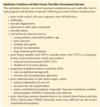
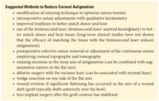

Figure 16-26 Slit-lamp photograph of epithelial ingrowth (arrow) in the graft–host interface after DSEK. (Courtesy of Robert W. Weisenthal, MD.)
Chapter 16
Clinical Approach to Corneal Transplantation
This chapter includes related videos. Go to aao.org/bcscvideo_section08 or scan the QR codes in the text to access this content.
Indicates selected key points within the chapter.
Corneal Transplantation
Corneal transplantation refers to surgical replacement of the host cornea with full-thickness (penetrating keratoplasty) or partial-thickness (lamellar keratoplasty) donor corneal tissue. If the donor is another person, the tissue is called an allograft and the procedure is referred to as allogeneic transplantation. If the donor tissue is from the same eye or fellow eye, it is called an autograft and the procedure is referred to as autologous transplantation. Innovations in keratoplasty have produced a veritable alphabet soup of nomenclature to describe the various procedures; see Table 16-1. Also see the sidebar, Milestones in the History of Corneal Transplantation, available online at aao.org/bcscsupplement_section08.
Arenas E, Esquenazi S, Anwar M, Terry M. Lamellar corneal transplantation. Surv Ophthalmol. 2012;57(6):510–529.
Melles GRJ. Posterior lamellar keratoplasty: DLEK to DSEK to DMEK. Cornea. 2006;25(8):879–881.
Corneal Transplant Procedures and Trends in the United States
Over the past 20 years, there has been a dramatic shift in surgeon preference for corneal transplant procedures—from penetrating keratoplasty (PK; also, PKP) to lamellar keratoplasty. In 2000, 99.3% of US corneal transplant procedures were PKs. In 2012, endothelial keratoplasty (EK) surpassed PK. Among EK procedures, the proportion of Descemet membrane endothelial keratoplasty (DMEK) surgeries steadily increased from 3% in 2012 to 49% in 2022, with Descemet stripping endothelial keratoplasty (DSEK) making up the remaining 51%. By 2022, the mix of keratoplasty procedures in the United States had evolved as follows:
PK is still performed in 10% of endothelial dysfunction cases. Corneal stromal opacity or scarring due to prolonged edema or infection may explain this finding. In 2022, the leading indication for PK was regrafts, followed by keratoconus (eTable 16-1, available online at aao.org/bcscsupplement_section08). The decreasing number of keratoplasties performed for keratoconus may be attributable to crosslinking and improved contact lenses. In Europe, DALK is becoming more common, perhaps because tissue suitable for DALK is more readily available than tissue for PK. Other advantages of DALK include a visual outcome similar to that for PK without the risk of endothelial rejection or increased risk of intraoperative suprachoroidal hemorrhage. By maintaining Descemet membrane, DALK has a reduced risk of traumatic ruptured globe, but direct trauma can still lead to wound dehiscence. In the United States, the slower acceptance of DALK may be explained by the increased surgical time and skill required, the lower reimbursement, and the easy access to tissue suitable for PK.
Dunker SL, Armitage WJ, Armitage M, et al. Practice patterns of corneal transplantation in Europe: first report by the European Cornea and Cell Transplantation Registry. J Cataract Refract Surg. 2021;47(7):865–869.
Eye Bank Association of America (EBAA). 2022 Eye Banking Statistical Report. EBAA; 2023.
Park CY, Lee JK, Gore PK, Lim CY, Chuck RS. Keratoplasty in the United States: a 10-year review from 2005 through 2014. Ophthalmology. 2015;122(12):2432–2442.
Xiao G, Tsou BC, Soiberman US, Prescott CR, Srikumaran D, Woreta FA. Keratoplasty in the United States: trends and indications from 2015 to 2020. Cornea. 2023;42(11):1360–1364.
Keratoplasty and Eye Banking
Tissue Processing and Preservation
Eye banks in the United States typically preserve tissue at 2°–8°C in media that contain nutrients, dextran, and antibiotics such as Eusol-C (Alchimia), which contains gentamycin, or Optisol GS (Bausch + Lomb) and KERASAVE (Alchimia), which contain streptomycin in addition to gentamycin. KERASAVE is supplied with separate amphotericin B tablets that may be dissolved in the solution prior to donor cornea insertion for antifungal activity. Tissue can remain viable for up to 2 weeks.
Eye banks in Europe typically incubate donor corneal tissue in organ culture storage at 37°C. Organ culture allows tissue to be stored for up to 35 days. However, it requires a microbiological examination at the end of the storage period to confirm sterility before the tissue is used, which can reduce the incidence of contaminated transplants. The organ culture system is also more complex, costly, and labor-intensive than intermediate storage at 4°C, but the longer storage time is advantageous in places where the supply of donor corneas is limited.
The process of tissue recovery and preparation includes a detailed donor history, a slit-lamp evaluation, and an endothelial cell count at the eye bank before release for transplantation. The optimal time from death to recovery is less than 12 hours, or up to 24 hours if the donor body has been refrigerated or ice has been placed over the eyes. Most eye banks prepare precut tissue for Descemet stripping automated endothelial keratoplasty (DSAEK) and prestripped tissue for DMEK, placing the letter “S” or other directional stamp on the anterior side to aid orientation. The option of preloaded tissue, particularly for DMEK, has become increasingly utilized.
Drury DC, Ramos S. Eye banking: structure and function. In Mannis MJ, Holland EJ,
eds. Fundamentals, Diagnosis and Management. 5th ed. Elsevier; 2022:246–249.
Cornea; vol 1.
Ellison MS, Straiko MMW, Clover J, et al. Eye banking after the great storage solution shortage: Performance comparison of Eusol-C/Kerasave versus Life4C/Optisol-GS.
Invest Ophthalmol Vis Sci. 2023;64(8):5140.
Eye Bank Association of America (EBAA). Eye Bank Association of America Medical Standards Dec 2022. EBAA; 2022.
Giurgola L, Gatto C, Honisch C, Rossi O, Ragazzi E, D’Amato Tothova J. Killing efficacy of a new hypothermic corneal storage medium against the micro-organisms frequently found in human donor cornea intended for transplantation. BMJ Open Ophthalmol. 2021;6(1):e000833. doi:10.1136/bmjophth-2021-000833
Glasser DB, DeMatteo J. Medical standards for eye banking. In: Mannis MJ, Holland EJ,
eds. Fundamentals, Diagnosis and Management. 5th ed. Elsevier; 2022:250–258.
Cornea; vol 1.
Donor-Cornea Selection
Eye bank personnel screen the donor’s medical record and obtain blood samples to rule out potentially transmissible diseases. Medical criteria that render a potential donor unsuitable for tissue recovery are listed in Table 16-2 . Diseases that can be transmitted from donor corneas are listed in Table 16-3 . Responsibility for determining whether a donor cornea is suitable for transplantation ultimately rests with the transplant surgeon.
Donor tissue from a person younger than 2 years is typically not used for PK because it is extremely steep and difficult to handle, which poses challenges in creating a watertight closure and achieving a predictable refractive outcome. Corneas from donors who have undergone cataract surgery are acceptable if they exceed the minimum acceptable cell count outlined in the eye bank’s policy (typically 2000 cells/mm2). Corneas with low endothelial cell counts and clear stroma may be suitable for anterior lamellar procedures. Conversely, corneas with anterior stromal opacities but acceptable cell counts may be used for EK. Descemet peeled from a donor younger than 50 years is thinner, tends to form a tighter scroll, and may be more difficult to unscroll during DMEK. However, a recent series involving tissue from donors younger than 50 years versus those 50 years and older reported comparable success with DMEK in both groups.
Results from 2 landmark studies of eye bank–supplied corneal tissue, the Cornea Donor Study (CDS) and the Cornea Preservation Time Study (CPTS), provide guidance for selection of donor tissue. The CDS evaluated the effect of donor age on graft survival in patients with PK. Donors were grouped into 2 cohorts according to age: 10–64 years and 65–75 years. At 5-year follow-up, the study showed no difference in the rate of graft survival between the 2 groups. However, at 10-year follow-up, the rate of graft survival was slightly lower in patients who received tissue from donors older than 70 years. The CPTS found that DSEK tissue preserved in Optisol GS or Life4°C (Duraent biologicals LTD) demonstrated comparable graft success rates for tissue stored up to 11 days after death and even up to 14 days in some circumstances.
Hill JR, Chen SY, Bauer AJ, et al. Younger donor tissue in Descemet membrane endothelial keratoplasty surgery: clinical outcomes. Cornea. 2021;40(8):1024–1030.
Rosenwasser GO, Szczotka-Flynn LB, Ayala AR, et al. Effect of cornea preservation time on success of Descemet stripping automated endothelial keratoplasty: a randomized trial. JAMA Ophthalmol. 2017;135(12):1401–1409.
Writing Committee for the Corneal Donor Study Research Group; Mannis MJ, Holland EJ, Gal RL, et al. The effect of donor age on penetrating keratoplasty for endothelial disease. Ophthalmology. 2013;120(12):2419–2427.
Transplantation for the Treatment of Corneal Disease
Ophthalmologists have many options for surgically treating the wide spectrum of corneal disease. The procedure of choice depends primarily on the depth and extent of corneal pathology (Table 16-4).
Hausheer JR, ed. Basic Techniques of Ophthalmic Surgery. 4th ed. American Academy of Ophthalmology; 2025.
Mannis MJ, Holland EJ, eds. Surgery of the Cornea and Conjunctiva. 5th ed. Elsevier; 2022. Cornea; vol 2.
Preoperative Evaluation and Preparation of the Transplant Patient
A complete ophthalmic evaluation, including a history (see text box) and examination, is necessary before considering corneal transplantation. It is important to obtain a detailed social history to help determine whether the patient or caretakers can adhere to the potentially complex postoperative treatment regimen.
Examination begins with an assessment of vision and vision potential. When vision can be improved with a rigid contact lens and the patient is able to tolerate contact lens wear, the patient can be offered treatment with a rigid scleral or corneal contact lens rather than surgery. In patients with an opaque cornea, simple clinical tests such as checking color vision, light projection, entoptic phenomenon, and afferent pupillary defect (ie, reverse Marcus Gunn pupil) may reveal additional conditions contributing to visual disability. Before considering PK, DALK, ALK, or another corneal procedure, checking for reduced corneal sensation is important.

Preexisting external eye conditions that may compromise corneal transplant healing and maintenance should be identified and controlled or corrected, if possible, before surgery. Conditions that compromise the ocular surface include dry eye, corneal hypoesthesia, acne rosacea, blepharitis, lagophthalmos, trichiasis, and abnormalities of eyelid position and likely will require continued care even after surgery.
A careful slit-lamp examination is a critical step in the evaluation process. In some patients, extensive guttae alone (Fig 16-1) may cause enough reduction in vision or symptoms of glare to warrant surgery. Subtle stromal edema can be seen at the slit lamp and can be measured with ultrasonic pachymetry, Scheimpflug imaging, or anterior segment optical coherence tomography (AS-OCT). (See Chapter 2 for a discussion of these tests.) Typically, corneal edema is worse in the morning and improves throughout the day. Diurnal fluctuation can be either documented by testing in the early morning and in the afternoon or simulated by having patients close their eyes for 30 minutes followed by repeated pachymetry and a slit-lamp examination. The presence of peripheral anterior synechiae (PAS), large iris defects, cataract, prior vitrectomy, anterior chamber or iris-/scleral-fixated intraocular lens (IOL), unstable IOL, tube shunts, or vitreous in the anterior chamber may influence the surgical approach. For example, difficulty in unfolding the DMEK lamella or creating an efficient air/gas bubble can complicate EK surgery. The presence of active keratitis or uveitis at the time of surgery is associated with a higher incidence of postoperative complications, such as graft rejection or failure, glaucoma, and cystoid macular edema. Ideally, there should be no ocular inflammation for several months before surgery.
During the preoperative evaluation, it is important to measure intraocular pressure (IOP). If possible, hypotony or elevated IOP should be normalized before intraocular surgery is considered. Poorly controlled glaucoma reduces endothelial cell survival and increases the risk of graft failure. Postoperative corticosteroid use may also affect IOP.
Additional testing such as OCT imaging may help detect retinal problems such as macular edema (cystoid or diabetic), epiretinal membrane, or age-related macular degeneration. If the media are completely opaque, B-scan ultrasonography can help rule out a retinal detachment or mass lesion.
Hannush SB, Riveroll-Hannush L. Preoperative considerations and decision-making in keratoplasty. In: Mannis MJ, Holland EJ. eds. Surgery of the Cornea and Conjunctiva. 5th ed. Elsevier; 2022:1155–1161. Cornea; vol 2.
Mian SI, Viriya ET, Ahmad S, et al; American Academy of Ophthalmology Preferred Practice Pattern Cornea/External Disease Panel. Corneal Edema and Opacification Preferred Practice Pattern. Ophthalmology. 2024;131(4):247–305.
Watanabe S, Oie Y, Fujimoto H, et al. Relationship between corneal guttae and quality of vision in patients with mild Fuchs endothelial corneal dystrophy. Ophthalmology. 2015;122(10):2103–2109.
Penetrating Keratoplasty
The most common indications for PK are
VIDEO 16-1 Penetrating keratoplasty (PK) for stromal scarring
and endothelial dysfunction in congenital hereditary
endothelial dystrophy.
Courtesy of Robert W. Weisenthal, MD.
Available at: aao.org/bcscvideo_section08
VIDEO 16-2 PK with scleral-sutured intraocular lens (IOL)
using an open-sky approach.
Courtesy of Robert W. Weisenthal, MD.
Available at: aao.org/bcscvideo_section08
Optical PK is intended to improve vision, whereas therapeutic PK may be performed to restore the structural integrity of the eye or to resolve an infectious or inflammatory keratitis that is refractory to conventional medical therapy. When therapeutic keratoplasty is performed to repair a perforation or descemetocele, it is also called tectonic keratoplasty. A therapeutic or tectonic keratoplasty may involve a partial-thickness donor tissue (see the section “Anterior lamellar keratoplasty” and Fig 16-12).
To educate the patient about the risks and benefits of corneal transplant surgery, the surgeon must understand potential intraoperative and postoperative complications, as well as postoperative management; these are discussed in the following subsections and are summarized in Table 16-5.
Typical surgical technique for PK is as follows. A Flieringa ring is secured on the eye to provide stability. The cornea is marked (usually centrally for an optical PK), and the donor tissue is prepared. The donor tissue graft is usually oversized by 0.25‒0.50 mm compared with the host trephination. A vacuum trephine is used to remove host corneal tissue, which is typically 7.5–8.5 mm in diameter. Following entry through the cornea, the anterior chamber is filled with viscoelastic, and the cut is completed with curved corneal scissors. The full-thickness donor corneal graft is then sutured to the host cornea with interrupted and/or running 10-0 nylon sutures. The knots are rotated so they are buried into the corneal stroma. Until the donor tissue is sutured and sealed, the eye is open and the iris and lens or IOL may bulge. An implanted IOL may extrude with vitreous prolapse, and expulsive choroidal hemorrhage can occur. Care must be taken to prevent the patient from squeezing and creating posterior positive pressure in the eye.
Chan CC, Perez Velasquez MA, Verdier DD. Penetrating keratoplasty: the fundamentals. In: Mannis MJ, Holland EJ, eds. Surgery of the Cornea and Conjunctiva. 5th ed. Elsevier; 2022:1162–1173. Cornea; vol 2.
Verdier DD, Rosenberg ED, Donnenfeld ED. Therapeutic keratoplasty. In: Mannis MJ, Holland EJ, eds. Surgery of the Cornea and Conjunctiva. 5th ed. Elsevier; 2022:1431–1444. Cornea; vol 2.
Intraoperative Complications
Complications that can occur during surgery are listed in Table 16-5.
Chen MC, Mannis MJ. Intraoperative complications of penetrating keratoplasty. In: Mannis MJ, Holland EJ, eds. Surgery of the Cornea and Conjunctiva. 5th ed. Elsevier; 2022:1174–1179. Cornea; vol 2.
Postoperative Care and Complications
The long-term success of a PK procedure depends on appropriate postoperative management and conscientious patient adherence. Frequent office visits are necessary to facilitate rapid vision rehabilitation and early recognition of the many complications that can occur after PK. Routine postsurgical care includes short-term use of topical antibiotics and a prolonged, perhaps indefinite, course of topical corticosteroids.
According to a survey of members of the Cornea Society, prednisolone acetate 1% is the topical corticosteroid of choice for prophylaxis against graft rejection, with dexamethasone as another option. Difluprednate is usually reserved for eyes at high risk of rejection. Loteprednol or fluorometholone may be preferable for steroid responders or phakic eyes. In low-risk cases, the corticosteroid dosage is typically 4 times per day for 1‒3 months, tapered according to inflammation until it has been reduced to once per day. If no rejection episodes occur in the first 6 to 12 months, the patient can be switched from prednisolone 1% to fluorometholone 0.1% or loteprednol 0.2%, which reduces the risk of corticosteroid-related complications. In the phakic patient, corticosteroids may be tapered off or the patient maintained on one low-potency formulation and/or low-frequency dosing to minimize the risk of cataract. The pseudophakic or aphakic patient is typically kept on a once-daily corticosteroid regimen. Patients using corticosteroids should be followed up for IOP elevation indefinitely.
In patients at high risk for graft rejection, the use of various immunosuppressive agents, including oral steroids, cyclosporine, tacrolimus, and mycophenolate mofetil, has been reported, but these medications require very careful follow-up because of their narrow therapeutic index. Topical tacrolimus has been advocated for use in high-risk patients.
Kharod-Dholakia B, Randleman JB, Bromley JG, Stulting RD. Prevention and treatment of corneal graft rejection: current practice patterns of the Cornea Society (2011). Cornea. 2015;34(6):609–614.
Magalhaes OA, Marinho DR, Kwitko S. Topical 0.03% tacrolimus preventing rejection
in high-risk corneal transplantation: a cohort study. Br J Ophthalmol. 2013;97(11):1395–1398.
Penetrating keratoplasty: postoperative management. In: Mannis MJ, Holland EJ, eds. Surgery of the Cornea and Conjunctiva. 5th ed. Elsevier; 2022:1187–1241. Cornea; vol 2.
Primary donor failure (primary endothelial failure)
When a graft is edematous from the first postoperative day, with high pachymetry readings, and remains so without inflammatory signs, the reason may be a deficiency of donor endothelium (Fig 16-2). However, the cause of donor failure is not always clear. Most surgeons allow at least 4 weeks and up to 2 months for spontaneous resolution of edema before considering regrafting.
Wound misalignment or leak
At the end of a PK procedure, the wound is always checked carefully for aqueous leakage. A Seidel test can be helpful postoperatively in assessing wound integrity, particularly in patients with low IOP and a normal or shallow anterior chamber. Small wound leaks or suture track leaks without iris incarceration often close spontaneously. Taping the eyelids closed (patching), therapeutic contact lenses, and use of aqueous suppressants may facilitate a watertight seal. Resuturing is advised for leaks associated with a shallow anterior chamber and low IOP lasting longer than 3 days.
Flat chamber or iris incarceration in the wound
When the IOP is low and there is a flat chamber or iris incarceration in the wound, it is best to reposit the iris, re-form the anterior chamber, and resuture the wound in the operating room. If the problem is not addressed promptly and appropriately, anterior synechiae may form, increasing the risk of graft rejection, glaucoma, or graft failure. Normal or high IOP with a shallow or flat anterior chamber may signify pupillary block or malignant glaucoma (aqueous misdirection). Initially, dilation of the pupil may help break the pupillary block; if this is not successful, other measures are required. See BCSC Section 10, Glaucoma, for discussion of pupillary block and malignant glaucoma.
Endophthalmitis
Postoperative endophthalmitis may result from intraoperative contamination, contamination of the donor corneal button, or persistent wound leak with invasion of microorganisms. The incidence of endophthalmitis is considerably higher in PK patients than in cataract surgery patients, particularly if the vitreous is invaded or if the donor died of infection. Immunosuppressed patients with moderate to severe eyelid inflammation are also at greater risk for infection. Early recognition and aggressive intervention can save the eye and possibly preserve vision in some cases. Donor rim culture can be performed perioperatively to identify potential contaminants. A rim culture positive for fungus is associated with endophthalmitis in 3% of recipients, and in the case of a positive bacterial rim culture, the risk is 1%. When a rim culture is positive, close postoperative follow-up is recommended for both recipients of the same donor, as both can develop infection. See also BCSC Section 9, Uveitis and Ocular Inflammation.
Borkar DS, Wibbelsman TD, Buch PM, et al. Endophthalmitis rates and clinical outcomes following penetrating and endothelial keratoplasty. Am J Ophthalmol. 2019;205:82–90.
Chen JY, Jones MN, Srinivasan S, Neal TJ, Armitage WJ, Kaye SB; NHSBT Ocular Tissue Advisory Group and Contributing Ophthalmologists (OTAG Audit Study 18). Endophthalmitis after penetrating keratoplasty. Ophthalmology. 2015;122(1):25–30.
Persistent epithelial defect
Large epithelial defects are common after PK, but they generally heal within 7–14 days. After this time, irreversible scarring and ulceration may occur. Patients who have reduced corneal sensation or decreased blink rate before surgery are at increased risk of persistent epithelial defects. It is important to appropriately manage ocular surface disease that contributes to the nonhealing epithelial defect (eg, dry eye, exposure, acne rosacea, blepharitis, or abnormal eyelid position). Lubrication, punctal occlusion with plugs or cautery, taping the eyelids closed, or therapeutic bandage contact lenses represent the first line of treatment. In difficult cases, amniotic membrane graft and temporary or permanent lateral tarsorrhaphy may be helpful. In neurotrophic eyes, recombinant human nerve growth factor (cenegermin, Dompé) may be applied (see the sections on neurotrophic keratopathy and persistent epithelial defects in Chapter 4 and tarsorrhaphy in Chapter 5.) If these measures are not successful, the diagnosis of herpetic keratitis should be considered even if this was not the underlying reason for the graft; in these cases, oral antivirals can be used as a therapeutic trial.
Elevated intraocular pressure
High IOP may occur at any time after PK. Thus, routine measurement of IOP and evaluation of the optic nerve head for cupping are important parts of postoperative care. Often, the first clinical sign of elevated IOP is the loss of folds in Descemet membrane. IOP elevation early in the postoperative period can be due to pupillary block, malignant glaucoma, hemorrhage, or pigment blocking the trabecular meshwork. Elevated IOP starting within 1 month postoperatively may be due to a corticosteroid response. However, high IOP can also occur many months or even years after uncomplicated use of a topical corticosteroid. Reducing the dosing or changing to a weaker corticosteroid such as fluorometholone may alleviate the IOP. When glaucoma develops, aggressive treatment with appropriate topical medications, laser surgery, or other surgical intervention is indicated. Although uncommon, epithelial downgrowth or fibrous ingrowth can also cause postoperative pressure elevation. See BCSC Section 10, Glaucoma, for further discussion of these conditions.
Recurrence of primary disease
Bacterial, fungal, viral, or amebic keratitis can recur in a graft in the early postoperative period. Herpetic keratitis can recur at any time (Fig 16-3). In recurrent infections, medical treatment directed at the causative agent is the initial form of therapy (see Chapters 11 and 12). With regard to topical corticosteroid use, management of infection must be balanced against the risk of rejection. Typically, the frequency or potency of the corticosteroid is significantly reduced in an effort to control the infection. In the case of herpes simplex, fungal, or amebic disease, topical corticosteroids are likely to potentiate the infection. Epithelial–stromal dystrophies such as granular or lattice corneal dystrophy can recur in the superficial cornea up to a year or more after the initial procedure (Fig 16-4; also see Chapter 8). Dystrophic recurrence in the superficial stroma can be treated with phototherapeutic keratectomy (see Chapter 5).
Suture-related problems
Postoperative problems related to sutures that may necessitate removal include
Loose or broken sutures do not contribute to wound stability and should be removed as soon as possible. Thus, inspection of suture integrity is an important part of the routine postoperative examination. Loose sutures usually stain with fluorescein because they have broken through the corneal epithelium. For this reason, the application of topical fluorescein is also essential during the examination. When a running suture has loosened, it should be removed in its entirety. Decolorizing nylon sutures are a signal that the sutures may soon break. Retained intrastromal suture fragments may be left in place. Vascularization along the suture indicates that the wound is adequately healed in that area and that sutures may safely be removed. Vascularized sutures are also prone to loosening, however, and may increase the likelihood of graft rejection.
After the sutures have been removed, the refractive error or astigmatism may shift dramatically, so it is important that the surgeon see the patient in 3–4 weeks to ensure wound stability and to recheck refraction. The shift may occur even when sutures are removed years after surgery. Sutures removed within the first few weeks of surgery may need to be replaced to avoid wound leak or marked astigmatism. In general, however, surgeons start removing sutures several months postoperatively either selectively according to astigmatism or entirely after more than 1 year.
Microbial keratitis
The following factors predispose the patient to infectious keratitis sometimes caused by unusual organisms:
Culture of the infiltrate and the exposed suture is recommended, and initiation of broad-spectrum antibiotic therapy can help avoid graft failure. A peculiar form of keratitis, infectious crystalline keratopathy (Fig 16-7; also see Chapter 12), is occasionally observed in grafts and other immunocompromised corneas. Branching colonies of organisms proliferate in the deep corneal stroma, creating a crystalline appearance, with minimal or no inflammatory response due to biofilm cover. Several bacteria and fungi have been implicated, but viridans streptococci are the most frequent causative organism.
Late non–immune-mediated endothelial failure
In the absence of acute inflammation or graft rejection, visually significant corneal edema occurring months to years after the procedure may be due to the normal attrition of endothelial cells, which occurs at a rate 4 times greater in transplanted corneas than in nontransplanted corneas. (See also BCSC Section 2, Fundamentals and Principles of Ophthalmology, for discussion of normal endothelial cell loss). In the Cornea Donor Study (CDS), median endothelial cell density had decreased by 70% over the first 5 years following transplantation; by 10 years, it had decreased by 76%. The CDS showed that the 10-year cumulative probability of non–immune-mediated graft failure was higher in patients treated for pseudophakic or aphakic corneal edema than in patients treated for Fuchs endothelial corneal dystrophy (FECD). The higher failure rate may be related to the placement of a poorly designed anterior chamber lens or improper placement of the lens during previous, complex cataract surgery. Such problems may require an IOL exchange at the time of PK. Patients with FECD may also have a higher peripheral endothelial reserve than pseudophakic or aphakic patients. In addition, patients with a prior diagnosis of glaucoma—especially those with a history of glaucoma surgery (particularly tube shunt surgery) and to a lesser extent, those taking glaucoma medications—face a higher probability of graft failure than do patients who have no history of glaucoma.
Lass JH, Benetz BA, Gal RL, et al; Writing Committee for the Cornea Donor Study Research Group. Donor age and factors related to endothelial cell loss 10 years after penetrating keratoplasty. Ophthalmology. 2013;120(12):2428–2435.
Sugar A, Gal RL, Kollman C, et al; Writing Committee for the Cornea Donor Study Research Group. Factors associated with corneal graft survival in the Cornea Donor Study. JAMA Ophthalmol. 2015;133(3):246–254.
Graft rejection
Corneal allograft rejection rarely occurs within the first month after PK; however, it may occur many years after the procedure. Large or eccentric grafts increase rejection rates due to exposure to corneal peripheral immune cells and conjunctival vasculature and lymphatics. Surgical techniques that avoid proximity to the peripheral cornea and early attention to loosening sutures and infections will minimize the risk of rejection.
Prompt recognition and treatment of rejection is critical, as ongoing endothelial rejection causes irretrievable endothelial cell loss.
At each visit, it is important to review with the patient the symptoms of graft rejection, which may include pain, redness, photophobia, and decreased vision. Office staff can be trained in how to respond if a keratoplasty patient calls with these symptoms. If recognized early and treated aggressively with corticosteroids, most episodes of graft rejection do not cause irreversible graft failure.
Corneal transplant rejection after PK occurs in 4 distinct clinical forms, which may occur either singly or in combination. (See also BCSC Section 9, Uveitis and Ocular Inflammation.)
Epithelial rejection The immune response may be directed entirely at the donor epithelium (Fig 16-8). Lymphocytes cause an elevated epithelial rejection line that advances centripetally. Because host cells replace lost donor epithelium, this form of rejection is problematic only in that in occasional cases it may herald the onset of endothelial rejection. Epithelial rejection occurs in a minority of patients experiencing rejection and is usually seen early in the postoperative period. It may be asymptomatic; however, blurred vision can occur if the epithelial ridge is near the visual axis. The donor epithelium is ultimately replaced by the host epithelium.
Subepithelial rejection Corneal transplant rejection may also present as subepithelial infiltrates (Fig 16-9; in DALK, see Fig 16-13). These may be asymptomatic or may cause glare or reduced vision. It is not known whether these lymphocytic cells are directed at donor keratocytes or at donor epithelial cells.
Easily missed on cursory examination, subepithelial infiltrates can best be seen with broad, oblique illumination. They resemble the infiltrates associated with adenoviral keratoconjunctivitis but are confined to the donor graft. Subepithelial graft rejection may completely resolve if treated, but not uncommonly it may presage the more severe endothelial graft rejection.
Stromal rejection Isolated stromal rejection is not common after PK; it is seen more commonly after DALK. It may present as stromal infiltrates or edema (see the section “Allograft rejection,” Fig 16-14A), deep stromal vascularization (see Fig 16-14B), or noninfiltrative keratolysis within the graft–host interface that does not extend into the peripheral recipient stroma. In severe or prolonged episodes of stromal rejection, the cornea can become necrotic. Stromal rejection may be accompanied or followed by endothelial rejection and is treated in a similar fashion.
Endothelial rejection The most common and serious form of graft rejection is endothelial rejection, because loss of a significant number of endothelial cells leads to graft failure. Inflammatory precipitates are seen on the endothelial surface in fine precipitates, in random clumps, or in linear form underlying or in some cases delineating the area of corneal edema (Khodadoust line; Fig 16-10; see also Fig 16-29 for keratic precipitates in DSEK). Inflammatory cells are usually present in the anterior chamber as well, but anterior uveitis is generally mild. As endothelial function is lost, the corneal stroma thickens with the development of posterior folds, and microcystic or bullous epithelial edema can occur. Patients have symptoms related to inflammation and corneal edema, such as photophobia, redness, irritation, halos around lights, or fogginess of vision.
Treatment The mainstay of therapy for corneal allograft rejection is frequent administration of corticosteroid eyedrops. Prednisolone 1%, dexamethasone 0.1%, or difluprednate ophthalmic emulsion 0.05% eyedrops are used as often as every hour, depending on the severity of the episode. Close follow-up to monitor for increased IOP is recommended, especially with difluprednate. For steroid responders or recalcitrant rejections, topical tacrolimus ointment 0.03% twice per day may be beneficial and is likely more effective than topical cyclosporine drops 4 times per day. For eyes with active herpes simplex epithelial keratitis, oral corticosteroids can be considered, rather than topical corticosteroids. The patient can also be prescribed an oral and possibly a topical antiviral medication.
In cases of endothelial rejection with edema, systemic corticosteroids may be considered either orally (prednisone 60 mg per day, tapered as the graft rejection responds) or intravenously (a 1-time dose of 125–500 mg methylprednisolone), in addition to topical treatment. Periocular injection of triamcinolone acetonide 0.5 cc of 40 mg/mL or dexamethasone 0.5 cc of 4 mg/mL may be administered for severe rejection episodes or nonadherent patients. Caution is advised in patients who may have steroid-induced elevation of IOP or a history of herpetic keratitis.
Brooks CC, Gupta PK. Diagnosis and management of corneal allograft rejection. In: Mannis MJ, Holland EJ, eds. Surgery of the Cornea and Conjunctiva. 5th ed. Elsevier; 2022:1207–1214. Cornea; vol 2.
Hashemian MN, Latifi G, Ghaffari R, et al. Topical tacrolimus as adjuvant therapy to corticosteroids in acute endothelial graft rejection after penetrating keratoplasty: a randomized controlled trial. Cornea. 2018;37(3):307–312.
Ruptured globe
Ruptured globe is the most serious postoperative complication of PK and to a lesser degree DALK, and it remains a lifetime threat in these patients. The scar that forms between graft and host is never as strong as the original corneal tissue. Traumatic wound dehiscence occurs in 5% of eyes following PK, with a visual acuity outcome of 20/200 or worse in most cases. Education for patients undergoing PK or DALK includes a discussion of the need for eye protection and lifetime avoidance of activities that present a high risk of ocular trauma.
Haddadin RI, Vora GK, Chodosh J. Corneal trauma following keratoplasty. Int Ophthalmol Clin. 2013;53(4):23–32.
Ma JF, Rapuano CJ, Hammersmith KM, Nagra PK, Dai Y, Azari AA. Outcomes of wound dehiscence post–penetrating keratoplasty. Cornea. 2016;35(6):778–783.
Meyer JJ, McGhee CN. Incidence, severity and outcomes of traumatic wound dehiscence following penetrating and deep anterior lamellar keratoplasty. Br J Ophthalmol. 2016;100(10):1412–1415.
Control of Postoperative Corneal Astigmatism and Refractive Error
Keratoplasty success is measured by the achievement of corneal clarity and functional refractive outcome. Severe astigmatism may be associated with decreased vision, anisometropia, aniseikonia, image distortion, and monocular diplopia, rendering an otherwise clear graft poorly functional. In children, visually significant complications or astigmatism may lead to amblyopia.
Methods to reduce corneal astigmatism are listed in the text box on p. 474. Postoperatively, the primary method of reducing astigmatism is to readjust or remove the sutures. However, in addition to suture manipulation, it is essential to optimize the condition of the ocular surface. If a single continuous suture has been placed, the surgeon may redistribute the suture tension at 1 month postoperatively, using corneal topography as a guide. Alternatively, if there is a combination of continuous and interrupted sutures, the interrupted sutures can be removed starting at 1 month ( Fig 16-11 ). If the patient has only interrupted sutures, suture removal should begin at a later stage (eg, ≥3 months) to avoid wound disruption. Clinicians must be cognizant of the slower wound healing in older patients receiving long-term topical corticosteroid therapy.
Prior to removal of the sutures, the most critical step is to identify the steep axis of astigmatism. Tight sutures, while causing focal flattening, will induce central steepening in the axis of the suture. The use of corneal topography, tomography, photokeratoscopy, or manual keratometry (see Chapter 2) is essential for evaluating the corneal contour. A power map may show an asymmetric bow tie oriented in the steep axis, whereas an anterior elevation map will typically show focal depression in the area of a tight suture (see Fig 16-11). Manifest refraction can aid in confirming the steep axis (plus cylinder). After manipulation or removal of the sutures, a topical antibiotic is usually prescribed for several days with a return visit for repeated corneal topography and manifest refraction.
In eyes with good vision and low astigmatism, sutures may be left, but the patient should be informed about the possibility of late suture break.
The patient can be fitted with a scleral or corneal rigid gas-permeable contact lens to improve symptoms related to anisometropia and high or irregular astigmatism. Corneal neovascularization associated with contact lens wear is less likely to occur or progress once all sutures have been removed. The optimal time for contact lens vision rehabilitation is after suture removal, once topography is stable (usually within several months of final suture removal).
Relaxing keratotomy, performed with a metal or diamond knife or a femtosecond laser, can be effective in reducing astigmatism in patients with poorly tolerated astigmatism following complete suture removal. The arcuate incisions are placed either in the donor cornea central to the graft–host junction or in the graft–host interface at the steep (plus cylinder) meridian. Suture placement at the flat meridian can augment the effect. Laser in situ keratomileusis (LASIK) and photorefractive keratectomy (PRK) have also been used to manage residual anisometropia and astigmatism after transplantation (see BCSC Section 13, Refractive Surgery).

If the patient has a visually significant cataract following PK, cataract extraction with appropriate IOL power selection is best performed after all sutures have been removed and contour has stabilized. When the patient has visually significant regular, stable astigmatism and a healthy, stable endothelial cell count, a toric IOL is a good option.
Pagano L, Shah H, Al Ibrahim O, et al. Update on suture techniques in corneal transplantation: a systematic review. J Clin Med. 2022;11(4):1078. doi:10.3390/jcm11041078
Wan KH, Chang JSM, Jhanji V. Toric intraocular lenses for astigmatism correction
after keratoplasty in phakic and pseudophakic eyes. J Cataract Refract Surg. 2022;48(9):
1078–1087.
Lamellar Keratoplasty
With advances in surgical instruments and techniques, cornea surgeons are now able to selectively remove the diseased or scarred part of the cornea, preserving the healthy part. The process of removing and replacing select layers of the cornea is called lamellar keratoplasty (LK). The general ophthalmologist should be familiar with the indications, limitations, and common complications associated with various types of lamellar surgery, including ALK, DALK, DSEK, and DMEK (see Table 16-5).
Anterior Lamellar Keratoplasty and Deep Anterior Lamellar Keratoplasty
Anterior lamellar keratoplasty
Anterior lamellar keratoplasty is the first-line corneal transplant procedure when the pathology does not involve the endothelium. The abnormal stroma is replaced with partial-thickness donor tissue, retaining the healthy host tissue. When the graft involves the central cornea, the best visual outcome is achieved by removing as much stroma as possible. ALK is performed for conditions such as keratoconus, postrefractive corneal ectasia, pellucid marginal degeneration, Terrien marginal degeneration, descemetocele formation (Fig 16-12), superficial corneal tumors or scars, and peripheral ulcerative keratitis with significant keratolysis. See Table 16-5 for additional information.
ALK can be performed manually or it can be microkeratome assisted or femtosecond laser assisted. When ALK is performed manually, a partial-thickness trephination is performed followed by blunt lamellar dissection to the desired depth. A partial-thickness, matched corneal donor tissue is then trephined and sutured. This technique can be performed eccentrically for corneal thinning after tumor excision or corneal melting. (Also see Chapter 13, Fig 13-25). When a microkeratome is used, a superficial free lamella is cut from the recipient eye. The donor cornea is mounted on an artificial anterior chamber, and a lamella of the same thickness is prepared using the microkeratome. The donor lamella is trephined to match the size of the recipient bed and is then sutured. See Chapter 5 for a demonstration of this technique during the insertion of a tattoo pigment in a blind eye for cosmetic appearance (see Chapter 5, Fig 5-17; Video 5-13). A similar procedure can be performed using a femtosecond laser. The depth of the stromal lenticule can be set according to the depth of the scar, measured by AS-OCT.
Sarnicola E, Sarnicola C, Sarnicola V. Techniques of anterior lamellar keratoplasty. In: Mannis MJ, Holland EJ, eds. Surgery of the Cornea and Conjunctiva. 5th ed. Elsevier; 2022:1256–1262. Cornea; vol 2.
Deep anterior lamellar keratoplasty
Deep anterior lamellar keratoplasty is a version of ALK in which full-depth (or close to full-depth) host stromal replacement is achieved. DALK has become the ALK procedure of choice since the advent of surgical advances such as the big bubble technique, particularly for central or paracentral pathology. The goal in DALK is to remove at least 85% of the stroma, ideally with complete stromal removal facilitated by creating a cleavage plane at Descemet membrane. In comparison to limited stromal removal, DALK provides a more uniform depth dissection and a smoother lamellar interface, which in turn leads to better postoperative vision.
Full-depth stromal removal is referred to as DALK. When stromal dissection is deep but not complete, it is called pre-Descemetic DALK. In an OCT study of patients who underwent DALK, 20 µm of residual stromal bed was not visually significant; however, 80 µm of residual tissue was associated with a reduction in vision. There are many techniques for dissecting stromal tissue to expose Descemet membrane, including the Anwar big bubble technique, the Melles technique, and the use of the femtosecond laser. The reader is encouraged to consult the references at the end of this section and Videos 16-3 through 16-5.
VIDEO 16-3 Deep anterior lamellar keratoplasty (DALK)
for keratoconus.
Courtesy of Robert W. Weisenthal, MD.
Available at: aao.org/bcscvideo_section08
VIDEO 16-4 DALK.
Courtesy of David D. Verdier, MD. Deep anterior lamellar keratoplasty. In: Copeland
RA Jr, Afshari NA, eds. Copeland and Afshari’s Principles and Practice of Cornea.
Jaypee Brothers Medical Publishers; 2013.
Available at: aao.org/bcscvideo_section08
VIDEO 16-5 Formation of the big bubble in DALK.
Courtesy of Dasa Gangadhar, MD.
Available at: aao.org/bcscvideo_section08
In the big bubble technique, air is injected into the stroma to create a cavity and separate the stroma from Descemet membrane. Two types of big bubble formation have been described. The type created depends on the location of Dua layer following air injection. Dua layer is a compact, tough posterior stromal collagen layer 6‒15 µm in thickness, just anterior to Descemet membrane, that contains few keratocytes and is relatively impervious to air injection. A type I bubble is formed by cleavage between the overlying stroma and Dua layer attached to Descemet membrane. A type II bubble occurs when Dua layer is separated from underlying Descemet membrane. Type II bubbles are less common than type I but are much more delicate and prone to perforation. They are typically recognized by their increased transparency and tendency to extend beyond the central 8 mm of the cornea. Mixed, or hybrid, type I and II bubbles can also occur; like type II bubbles, they require extreme caution to avoid perforation.
Even for experienced surgeons, it may not always be possible to expose Descemet membrane using these techniques. In such cases, manual dissection is generally preferable to PK, but it poses a risk of reduced best-corrected visual acuity due to incomplete removal of the host stromal tissue and secondary interface haze. After recipient stromal removal, a full-thickness donor cornea is trephined, and Descemet membrane is removed. Suturing of the donor cornea to the recipient bed is performed with interrupted and/or running nylon 10-0 sutures (see Videos 16-3 through 16-5). Suture removal considerations and timing are similar to those of PK.
Chen G, Tzekov R, Wensheng L, Jiang F, Mao S, Tong Y. Deep anterior lamellar keratoplasty versus penetrating keratoplasty: a meta-analysis of randomized controlled trials. Cornea. 2016;35(2):169–174.
Dua HS, Faraj LA, Said DG, Gray T, Lowe J. Human corneal anatomy redefined: a novel pre-Descemet’s layer (Dua’s layer). Ophthalmology. 2013;120(9):1778–1785.
Soiberman US, Cohen AW. Deep anterior lamellar keratoplasty (DALK). In: Hausheer JR, ed. Basic Techniques of Ophthalmic Surgery. 4th ed. American Academy of Ophthalmology; 2025:113–118.
Advantages
Anterior lamellar keratoplasty has many advantages over PK. It eliminates a full-thickness corneal incision into the anterior chamber, thereby avoiding the risks of glaucoma, cataract, retinal detachment, cystoid macular edema, expulsive hemorrhage, and endophthalmitis. Because the endothelium is not replaced, ALK also eliminates the risk of endothelial rejection and, consequently, decreases the need for long-term topical corticosteroids. The incidence and severity of a ruptured globe are also reduced in ALK. In comparison to PK, DALK offers equivalent or near-equivalent vision. The dramatic loss of endothelial cells over time following PK does not occur with DALK.
Disadvantages
Anterior lamellar keratoplasty does not replace damaged endothelium. Also, the procedure is more technically demanding and time-consuming than PK. It may be associated with irregular or significant regular astigmatism and with opacification and vascularization of the graft–host interface. Stromal rejection is still possible with ALK and may be problematic.
Complications
Allograft rejection Because the corneal endothelium is not replaced, endothelial rejection cannot take place; however, epithelial rejection, subepithelial infiltrates (Fig 16-13), and stromal rejection can still occur. Fortunately, corticosteroid therapy can be effective in these situations. Stromal rejection, characterized by significant edema and deep vascularization, can lead to corneal opacification and is more common after DALK and ALK than after PK (Fig 16-14).
Opacification and vascularization of the interface Meticulous dissection of the lamellar plane during ALK is essential for the creation of a smooth, clear interface. Irrigation and cleaning of the lamellar bed at the time of surgery reduce the likelihood of postoperative opacification. Retained interface debris, secondary vascularization, microbial infections, or Descemet membrane wrinkling can reduce vision or prolong vision rehabilitation. Neovascularization can increase the risk of lipid keratopathy, leading to further corneal opacification.
Rupture of Descemet membrane If the rupture is small, the procedure can usually be completed but may result in Descemet detachment. If there is a large perforation, conversion to PK may be necessary.
Double anterior chamber or Descemet detachment Double (pseudo-) anterior chamber or Descemet detachment can occur because of fluid in the interface, which results from a Descemet membrane perforation or retained viscoelastic material. Injection of intracameral air can facilitate reattachment.
Additional complications associated with ALK Just as in PK, patients who have undergone ALK can experience high and/or irregular corneal astigmatism, prolonged healing due to ocular surface disease, suture erosion (Fig 16-15) and abscess, infectious keratitis, neovascularization, graft rejection, and graft failure. In contrast to PK, endophthalmitis and PAS formation are rare.
Endothelial Keratoplasty
In 1998, Melles introduced the concept of posterior lamellar surgery for endothelial dysfunction through a procedure called deep lamellar endothelial keratoplasty (DLEK). Melles modified the technique to include stripping of the host Descemet membrane and endothelium (descemetorhexis) and insertion of a hand-dissected posterior lamellar donor button, which was positioned against the host bed with an air bubble in the anterior chamber; the revised technique is known as Descemet stripping endothelial keratoplasty (DSEK). Gorovoy later automated the lamellar dissection of the donor tissue by using a microkeratome, giving rise to Descemet stripping automated endothelial keratoplasty (DSAEK). Over time, the term DSEK has been adopted for these automated procedures; in this book, the term DSEK is similarly used.
Melles further modified the DSEK procedure by using only donor Descemet membrane and endothelium in a procedure termed Descemet membrane endothelial keratoplasty (DMEK). Further innovations in the technique used to insert and unscroll the tissue, the adoption of an “S” or another directional stamp for graft orientation, and the use of sulfur hexafluoride (SF6) gas to extend the duration of the gas bubble have substantially reduced the incidence of postoperative complications and increased the use and success of DMEK. In addition, the availability of eye bank–prepared, prestamped, and preloaded tissues for DSEK and DMEK has increased the safety and popularity of both procedures.
EK is now the preferred technique for treatment of patients with corneal endothelial dysfunction in the absence of stromal scarring. Due to the success of and rapid rehabilitation observed with EK, the indications for this procedure have expanded to include patients with visually significant cornea guttae in the absence of stromal edema and for endothelial graft failure following PK.
Table 16-6 shows the increased use of DSEK and DMEK in the United States since 2016; EK use surpassed PK use in 2012. Videos 16-6 through 16-12 show the DSEK and DMEK procedures. In these procedures, the host Descemet membrane is peeled and a strip with a diameter 0.5 mm larger than the intended EK is removed (usually 8.5–9 mm of stripping for an 8–8.5-mm graft). To reduce the risk of pupillary block, an inferior iridectomy can be performed. In DSEK, the corneal lamella is inserted through an incision using an inserter, glide, or forceps or by pulling with intraocular forceps through an opposite paracentesis. In DMEK, the folded double-scroll Descemet graft is injected through a small incision. It is unrolled by tapping on the cornea and flattening the anterior chamber to keep it open. After centering, the graft is attached to the posterior surface of the cornea by injecting air or gas underneath the implanted tissue. In vitrectomized eyes, shallowing the anterior chamber is difficult and the unfolding of the DMEK graft is challenging. About an hour postoperatively, the patient can be examined for signs of pupillary block and elevated IOP. If required, excessive air or gas can be evacuated via a paracentesis at the slit lamp (see the section Postoperative Care and Complications). The presence of intraocular air or gas can also be assessed, and the patient can undergo rebubbling (reinjection of air) if necessary.
Comparisons of PK and endothelial surgery and results are provided in Table 16-7 (also see Table 16-5).
VIDEO 16-6 Descemet stripping endothelial keratoplasty (DSEK).
Courtesy of Arie L. Marcovich, MD, PhD, and Waleed Ghannam, MD.
Available at: aao.org/bcscvideo_section08
VIDEO 16-7 DSEK with alternative lenticule unfolding.
Courtesy of David D. Verdier, MD.
Available at: aao.org/bcscvideo_section08
VIDEO 16-8 DSEK combined with phacoemulsification and
IOL implantation.
Courtesy of Robert W. Weisenthal, MD.
Available at: aao.org/bcscvideo_section08
VIDEO 16-9 Descemet membrane endothelial keratoplasty (DMEK).
Courtesy of Robert W. Weisenthal, MD.
Available at: aao.org/bcscvideo_section08
VIDEO 16-10 Phakic DMEK.
Courtesy of David D. Verdier, MD.
Available at: aao.org/bcscvideo_section08
VIDEO 16-11 DMEK combined with phacoemulsification and
IOL implantation.
Courtesy of Arie L. Marcovich, MD, PhD, and Waleed Ghannam, MD.
Available at: aao.org/bcscvideo_section08
VIDEO 16-12 DMEK graft unfolding and positioning tips.
Courtesy of Michael D. Straiko, MD.
Available at: aao.org/bcscvideo_section08
Chen S-Y, Terry MA. Step-by-step Descemet’s membrane endothelial keratoplasty surgery. Taiwan J Ophthalmol. 2019;9(1):18–26.
Deng SX, Lee WB, Hammersmith KM, et al. Descemet membrane endothelial keratoplasty: safety and outcomes: a report by the American Academy of Ophthalmology. Ophthalmology. 2018;125(2):295–310.
Endothelial keratoplasty. In: Mannis MJ, Holland EJ, eds. Surgery of the Cornea and Conjunctiva. 5th ed. Elsevier; 2022:1323–1413. Cornea; vol 2.
Livny E, Bahar I, Levy I, Mimouni M, Nahum Y. “PI-less DMEK”: results of Descemet’s membrane endothelial keratoplasty (DMEK) without a peripheral iridotomy. Eye (Lond). 2019;33(4):653–658.
Peraza-Nieves J, Baydoun L, Dapena I, et al. Two-year clinical outcome of 500 consecutive cases undergoing Descemet membrane endothelial keratoplasty. Cornea. 2017;36(6):655–660.
Price DA, Kelley M, Price FW Jr, Price MO. Five-year graft survival of Descemet membrane endothelial keratoplasty (EK) versus Descemet stripping EK and the effect of donor sex matching. Ophthalmology. 2018;125(10):1508–1514.
Stulting RD, Lass JH, Terry MA, et al. Factors associated with graft rejection in the Cornea Preservation Time Study. Am J Ophthalmol. 2018;196:197–207.
Advantages
Because EK involves inserting the donor tissue through a small corneal or scleral incision rather than through a large full-thickness incision as in PK, it has many advantages, including the following:
Disadvantages
The following are some of the main disadvantages of EK:
Potential for reduced postoperative visual acuity
Concomitant corneal pathology such as basement membrane changes or subepithelial fibrosis may cause surface irregularity that affects postoperative vision after EK. In some cases, debridement or superficial keratectomy may be beneficial. Preexisting long-standing corneal edema can also cause decreased vision after EK due to light scattering. A prospective evaluation of patients with FECD who underwent DSEK revealed that the corneal light scattering associated with anterior stromal haze progressively improved throughout the 5-year follow-up period, suggesting an ongoing corneal remodeling process. Best spectacle-corrected visual acuity (BSCVA) also continued to improve each year, with 56% of eyes at 20/25 and 20% of eyes at 20/20 5 years postoperatively.
After DMEK, visual acuity reaches its maximum potential by 6 months. On average, patients who have undergone DMEK see 1 Snellen line better than do DSEK patients, with 50% of DMEK eyes at 20/20 after 1 year. The difference in visual outcome between DSEK and DMEK eyes may be related to interface irregularities and alteration of the posterior corneal curvature that occurs with DSEK. In contrast, a nearly normal anatomical restoration of the cornea is achieved with DMEK, which is due to the extremely thin graft tissue used and the exceedingly smooth interface created.
Nevertheless, some surgeons prefer DSEK for routine EK because manipulation and placement of tissue are easier. DSEK is particularly useful in patients with disorganized anterior segments or with anterior chamber IOLs and in patients who have undergone vitrectomy or tube shunt surgery or other glaucoma procedure in which DMEK lamella is more difficult to unfold and attach. Some surgeons advocate using thinner donor grafts (between 50 and 120 µm) to improve visual outcomes after DSEK (a variation called ultrathin DSEK). Although a meta-analysis of 23 series found that there may be a weak correlation, overall, the evidence was insufficient to conclude that graft thickness is clinically important with respect to BCVA after DSEK. More recently described nanothin (≤50 µm) DSEK grafts have yielded vision and complication rates comparable to those of DMEK.
Dickman MM, Kruit PJ, Remeijer L, et al. A randomized multicenter clinical trial of ultrathin Descemet stripping automated endothelial keratoplasty (DSAEK) versus DSAEK. Ophthalmology. 2016;123(11):2276–2284.
Hamzaoglu EC, Straiko MD, Mayko ZM, Sáles CS, Terry MA. The first 100 eyes of standardized Descemet stripping automated endothelial keratoplasty versus standardized Descemet membrane endothelial keratoplasty. Ophthalmology. 2015;122(11):2193–2199.
Hurley DJ, Murtagh P, Guerin M. Ultrathin Descemet stripping automated endothelial keratoplasty (UT-DSAEK) versus Descemet membrane endothelial keratoplasty (DMEK)‒a systematic review and meta-analysis. Eye (Lond). 2023;37(14):3026–3032.
Kurji KH, Cheung AY, Eslani M, et al. Comparison of visual acuity outcomes between nanothin Descemet stripping automated keratoplasty and Descemet membrane endothelial keratoplasty. Cornea. 2018;37(10):1226–1231.
Wacker K, Baratz KH, Maguire LJ, McLaren JW, Patel SV. Descemet stripping endothelial keratoplasty for Fuchs’ corneal endothelial dystrophy: five-year results of a prospective study. Ophthalmology. 2016;123(1):154–160.
Intraoperative Complications
Complications that can occur during DSEK or DMEK include improper orientation during placement of the donor tissue; graft failure due to excessive manipulation of the donor tissue, tearing of the donor tissue, or retention of viscoelastic in the interface; and vitreous or blood in the interface (Fig 16-17). Vitreous can enter the anterior chamber in eyes that have undergone complicated cataract surgery, whereas bleeding can arise from the peripheral iridectomy and may impede lamellar unfolding. See Table 16-5 for other intraoperative complications associated with EK. Intraoperative AS-OCT, if available, enables the surgeon to check the entire graft for adherence and may reduce the incidence of incomplete attachment intraoperatively (Fig 16-18).
Postoperative Care and Complications
Dislocation or decentration of the donor graft
In DSEK and DMEK, the donor tissue should be well centered over the pupil, without fluid in the interface. To promote tissue adherence over the ensuing days, 40%–80% of the air or gas (20% SF6) bubble injected intraoperatively is intended to remain on postoperative day 1 (Fig 16-19). The air bubble resorbs within 2–4 days, and SF6 resorbs within 4–7 days. However, some surgeons remove the air on the day of surgery. See Table 16-7 for dislocation rates for DSEK and DMEK.
DSEK Dislocation or decentration of the donor graft (Fig 16-20) typically occurs within the first 24 hours after DSEK. A soft eye due to preexisting tube shunt surgery or uncontrolled release of the air increases the likelihood of a decentered or dislocated graft. Retained viscoelastic or the presence of vitreous in the interface may also prevent proper adherence of the graft. If the graft remains attached on postoperative day 1, subsequent dislocation is unlikely, although inadvertent trauma or eye rubbing during the first week may displace the donor tissue. Wearing glasses or a shield to protect the eye is recommended, along with exercising caution during instillation of eyedrops.
It is still not clear how long the air bubble should be retained after DSEK; some surgeons remove the air completely on the day of surgery without an increased incidence of tissue dislocation. This raises the possibility that long-term retention of an air bubble is not necessary for graft adherence in DSEK. Also unclear are the role and length of time for supine positioning following surgery to promote and retain graft adherence. Most surgeons advocate supine positioning for at least 1 hour after surgery; some recommend up to 4 days in this position, at least part-time. Supine positioning may be more important for DMEK than for DSEK because DSEK lamella has a stromal scaffold that reduces the possibility of late detachments.
DMEK In DMEK, the donor tissue is more delicate, and as a result, peripheral or central detachments are more common (Fig 16-21). Strategies to reduce DMEK graft detachment include the use of isoexpansile 20% SF6 gas, which resorbs more slowly than air, and inferior peripheral iridectomy, which can allow placement of a larger bubble with reduced concern of pupillary block glaucoma. For patients receiving anticoagulants the surgeon may consider performing a peripheral iridotomy with a YAG laser prior to EK surgery to minimize the risk of intraoperative bleeding.
To identify and follow graft detachment, postoperative AS-OCT (Fig 16-22) can be used in addition to intraoperative AS-OCT (see Fig 16-18). Small peripheral detachments that do not involve the visual axis can be observed over several weeks to ensure there is no progression. They usually seal without adverse impact.
The surgeon may wish to consider rebubbling in the following situations:
In one study, significant reduction in endothelial cell counts was reported at 5-year follow-up in patients with clinically significant graft detachments that were managed without rebubbling; this reduction led to a higher rate of late graft failure. In some cases, permanent stromal haze developed secondary to chronic corneal edema, worsening the visual outcome after repeated DMEK. Thus, early rebubbling seems to be the best course in such cases (Fig 16-23B). When rebubbling is necessary, it can be performed at the slit lamp (Video 16-13).
VIDEO 16-13 Rebubbling a DMEK graft at the slit lamp.
Courtesy of Christopher S. Sáles, MD; Michael D. Straiko, MD; and Mark A. Terry, MD.
Available at: aao.org/bcscvideo_section08
If after 2 months the graft is attached but the cornea still has visually significant edema, repeated surgery is indicated before the development of chronic corneal edema, which can lead to bullous keratopathy, epithelial breakdown, and scarring or possible secondary infection. Repeated EK, either DMEK or DSEK, before the development of permanent corneal changes has a visual prognosis similar to that of the original procedure.
Baydoun L, Ham L, Borderie V, et al. Endothelial survival after Descemet membrane endothelial keratoplasty: effect of surgical indication and graft adherence status. JAMA Ophthalmol. 2015;133(11):1277–1285.
Lehman RE, Copeland LA, Stock EM, Fulcher SF. Graft detachment rate in DSEK/DSAEK after same-day complete air removal. Cornea. 2015;34(11):1358–1361.
Price FW Jr, Price MO. To intervene or not to intervene: that is the question. Ophthalmology. 2015;122(1):6–7.
Sáles CS, Straiko MD, Terry MA. Novel technique for rebubbling DMEK grafts at the slit lamp using intravenous extension tubing. Cornea. 2016;35(4):582–585.
Pupillary block
Anterior pupillary block or iris bombé may occur if the anterior chamber bubble migrates posteriorly, preventing aqueous flow through the pupil. A large bubble in the anterior chamber in the presence of a small pupil can also block the flow of aqueous through the pupil. Figures 16-24 and 16-25 show pupillary block after DSEK and DMEK, respectively. The resultant acute rise in IOP results in pain and can exacerbate preexisting optic nerve damage. Pupillary block may also lead to iridocorneal adhesion, damaging the graft and increasing the risk of rejection. Pupil dilation and supine positioning may relieve the pupillary block; if this fails, some air should be removed. An inferior iridectomy performed prior to or at the time of the surgery reduces the likelihood of this scenario.
Epithelial ingrowth
Epithelial ingrowth following EK is visible as a gray-white deposit within the graft–host interface (Fig 16-26). It typically remains stable and is asymptomatic unless it involves the visual axis. The ingrowth may
In rare cases, epithelial ingrowth leads to graft failure that is missed on clinical examination but recognized on histologic examination of the tissue after removal. In a large series of cases, the majority of patients with epithelial ingrowth were simply observed and continued to see well without further intervention. In the atypical cases that resulted in graft failure, a second DSEK or PK produced a good outcome without recurrent ingrowth. This contrasts with the progressive and devastating course of intraocular epithelial downgrowth associated with intracapsular cataract extraction or full-thickness PK. Epithelial ingrowth can be similar in appearance to fungal or bacterial interface infection and left untreated, both conditions may lead to a progressive deterioration of vision, accompanied by anterior chamber inflammation and pain.
Cheng AMS, Kubal A, Gupta SK, Vedula AS, Yang DTY, Kubal AA. Epithelial ingrowth in Descemet membrane endothelial keratoplasty associated with vitreous loss. BMC Ophthalmol. 2024;24(1):135. doi:10.1186/s12886-024-03370-4
Dalal RR, Raber I, Dunn SP, et al. Epithelial ingrowth following endothelial keratoplasty. Cornea. 2016;35(4):465–470.
Other interface pathology
After EK, infections can occur in the graft–host interface as a result of pathogens passing through venting incisions, contaminated donor tissue, or bacteria from the ocular surface dragged into the eye during insertion. The incidence of postoperative fungal infections is considerably higher for EK than for PK. These infections have occurred primarily in eyes that have undergone DSEK, but there are case reports of infections after DMEK as well (Fig 16-27). It is also possible that the infection risk is increased because of microbial growth, which is due to tissue warming that occurs during preparation of donor tissue for EK. Over the past 10 years, the Eye Bank Association of America has reported EK fungal infection rates ranging from 0.011% to 0.052%, peaking in 2013 and decreasing to 0.013% in 2018. Donor rims that are culture positive for fungus have predictive value. In the Cornea Preservation Time Study, the overall rate of positive donor rim fungal cultures was 1.9%, with postoperative recipient fungal infection occurring in 6.7%, similar to other recent studies. Using a double application of povidone-iodine during tissue procurement, before and after conjunctival peritomy, may help to reduce tissue contamination.
Textural interface opacity (TIO) describes interface irregularity that results from retained viscoelastic or from the shearing of stromal fibrils during an irregular microkeratome donor preparation. Interface opacification may also occur because of retention of fibers, incomplete removal of Descemet membrane, and persistence of interface fluid. The opacity has 2 forms: elongated (a lacy honeycomb pattern of deposits with intervening clear zones) (Fig 16-28) and punctate (small, discrete deposits). TIO may be associated with reduced vision, but it typically improves or disappears completely over many months. There have been no reports of textural interface problems after DMEK; TIO has been reported only in DSEK. Meticulous removal of viscoelastic before graft insertion may reduce the risk of TIO.
Eye Bank Association of America (EBAA). 2018 OARRS Report. EBAA; 2019.
Mian SI, Aldave AJ, Tu EY, et al. Incidence and outcomes of positive donor rim cultures and infections in the Cornea Preservation Time Study. Cornea. 2018;37(9):1102–1109.
Vira S, Shih CY, Ragusa N, et al. Textural interface opacity after Descemet stripping automated endothelial keratoplasty: a report of 30 cases and possible etiology. Cornea. 2013;32(5):e54–e59.
Progression of cataracts
Endothelial keratoplasty performed in a phakic eye may induce cataract progression, particularly in patients with shallower anterior chambers (<3.0 mm); therefore, EK with lens extraction has been recommended in patients older than 50 years or in the presence of mild to moderate cataract. DSEK or DMEK combined with cataract extraction does not increase the risk of graft dislocation, endothelial cell loss, or other non–cataract-related complications. After combined surgeries, however, patients usually are a little more hyperopic than the intended target, and the surgeon should aim for slight myopia as a result. In edematous corneas, the keratometry may be inaccurate but may change once the edema has been relieved.
Burkhart ZN, Feng MT, Price FW Jr, Price MO. One-year outcomes in eyes remaining phakic after Descemet membrane endothelial keratoplasty. J Cataract Refract Surg. 2014;40(3):430–434.
Campbell JA, Ladas JG, Wang K, Woreta F, Srikumaran D. Refractive accuracy in eyes undergoing combined cataract extraction and Descemet membrane endothelial keratoplasty. Br J Ophthlmol. 2022;106(5):623–627.
Primary graft failure
In published reports, primary graft failure rates (within 60 days) range from 0% to 29% (average 5%) for DSEK and from 2.2% to 8.0% for DMEK (see Table 16-7). The lower rates probably reflect better surgical technique, which results in less tissue manipulation and a lower rate of graft dislocations and thus less endothelial trauma. In complicated cases, there is a higher chance of graft detachment and primary failure.
Graft rejection
The clinical presentation of graft rejection in EK patients differs from that in PK patients. The classic endothelial rejection line of PK is not commonly seen; rather, multiple fine keratic precipitates scattered across the cornea are typically noted (Fig 16-29).
The incidence of corneal graft rejection following EK is lower than that after PK. In a prospective study of DSEK patients that were maintained on topical corticosteroids indefinitely, the rejection rate was 2% after 5 years in 51 eyes. The rate of graft rejection after DMEK is even lower than after DSEK.
The postoperative regimen for graft rejection after EK is similar to that after PK as described earlier, although corticosteroids can be tapered down faster in EK patients. Long-term prophylaxis with a topical corticosteroid used once daily, regardless of the strength, is important in reducing the incidence of graft rejection. In a prospective study of 400 DMEK eyes followed up for 24 months, rejection occurred in 6% of eyes after corticosteroids were discontinued at 1 year versus 0% of eyes continued on a daily corticosteroid eyedrop. However, it is important to discuss with the patient the potential for elevated IOP, infection, and cataract with long-term corticosteroid use.
Hos D, Matthaei M, Bock F, et al. Immune reactions after modern lamellar (DALK, DSAEK, DMEK) versus conventional penetrating corneal transplantation. Prog Retin Eye Res. 2019;73:100768.
Price MO, Scanameo A, Feng MT, Price FW Jr. Descemet’s membrane endothelial keratoplasty: risk of immunologic rejection episodes after discontinuing topical corticosteroids. Ophthalmology. 2016;123(6):1232–1236.
Wacker K, Baratz KH, Maguire LJ, McLaren JW, Patel SV. Descemet stripping endothelial keratoplasty for Fuchs’ endothelial corneal dystrophy: five-year results of a prospective study. Ophthalmology. 2016;123(1):154–160.
Endothelial cell loss
Several maneuvers may contribute to early endothelial cell loss in EK patients, including
In a comparative study at 5 years postoperatively, endothelial cell loss was similar between DMEK (48% ± 19%) and DSEK (47% ± 19%). In a 10-year follow-up study, the median DSEK endothelial cell loss was 53% at 5 years and 71% at 10 years. These rates compare favorably to results for PK in the Cornea Donor Study, which showed a median cell loss of 70% at 5 years and 76% at 10 years. Long-term viability of the endothelial cells is influenced by ocular comorbidities such as previous filtering surgery and, in particular, tube shunt surgery. Long-term prospective trials on DMEK and DSEK are necessary to better understand the clinical biology of the corneal endothelium and the impact of endothelial cell loss on graft viability.
Ni N, Sperling BJ, Dai Y, Hannush SB. Outcomes after Descemet stripping automated endothelial keratoplasty in patients with glaucoma drainage devices. Cornea. 2015;34(8):870–875.
Price MO, Calhoun P, Kollman C, Price FW Jr, Lass JH. Descemet stripping endothelial keratoplasty: ten-year endothelial cell loss compared with penetrating keratoplasty. Ophthalmology. 2016;123(7):1421–1427.
Opacification of hydrophilic acrylic IOLs
Following air or gas injection into the anterior chamber for EK attachment, an implanted hydrophilic acrylic IOL may opacify due to calcification. The calcification typically occurs on the anterior surface of the IOL at the pupillary entrance (Fig 16-30), usually within several months postoperatively. Rebubbling and use of SF6 gas have been associated with increased risk of opacification, and various brands of hydrophilic acrylic IOLs have been reported to opacify. The opacification may require IOL exchange due to deterioration of vision. When combined EK and cataract surgery are performed, it is best to avoid use of a hydrophilic acrylic IOL. If one has already been implanted, air may be preferred over SF6 to minimize bubble‒IOL contact duration. The patient should be informed that such IOL opacification can occur after EK surgery.
Memmi B, Knoeri J, Bouheraoua N, Borderie V. Intraocular lens calcification after pseudophakic endothelial keratoplasty. Am J Ophthalmol. 2023;246:86–95.
Emerging Methods for Treatment of Endothelial Dysfunction
Descemet stripping only (DSO) is an evolving procedure in which a central descemetorhexis is performed for treatment of FECD and possibly other causes of endothelial cell loss. Removing thickened Descemet membrane and cornea guttae characteristic of FECD may allow peripheral endothelial cells to migrate centrally and restore endothelial function (Fig 16-31, Video 16-14).
VIDEO 16-14 Descemet stripping only.
Courtesy of David D. Verdier, MD.
Available at: aao.org/bcscvideo_section08
DSO is unlikely to succeed in FECD eyes with peripheral endothelial cell counts less than 1000 cells/mm2 or in eyes with other conditions associated with diffuse endothelial cell loss, such as pseudophakic or aphakic corneal edema. This limits the suitable candidates for successful DSO. In a prospective trial, 18 patients with FECD were treated with a 4–5-mm descemetorhexis; 8 patients were also given topical ripasudil 0.4% (a Rho kinase inhibitor) 4 times daily for 2 months. At 1-year follow-up, visual acuity was 20/25 or better in 16 patients, 20/30 in 1 patient, and 20/200 in 1 patient who later underwent successful DMEK. The topical ripasudil group had more rapid recovery to 20/40 (4.6 vs 6.5 weeks), higher endothelial cell density at 1 year (1086 vs 736 cells/mm2), and less loss of peripheral endothelial cells (1142 vs 1233 cells/mm2). These results, along with results from other studies, suggest that use of ripasudil or other Rho kinase inhibitors might promote corneal endothelial regeneration. Similar visual outcomes were demonstrated in a retrospective study comparing DSO with DMEK in patients with mild to moderate FECD. The average time to achieve functional vision was longer in the DSO group.
Treatment of corneal endothelial disease with cultured human endothelial cells, either by injection or via a cell carrier using techniques similar to DMEK, has with few exceptions been confined to the laboratory. In a study of 11 patients with severe endothelial cell loss, all patients received an injection of cultured human endothelial cells supplemented with a Rho kinase inhibitor into the anterior chamber, and then remained prone for 3 hours. At 5-year follow-up, 10 of 11 corneas were clear, with a mean endothelial cell density of 1257 ± 467 cells/mm2; in addition, visual acuity was better than 20/60 in these 10 patients.
Borkar DS, Veldman P, Colby KA. Treatment of Fuchs endothelial dystrophy by Descemet stripping without endothelial keratoplasty. Cornea. 2016;35(10):1267–1273.
Huang MJ, Kane S, Dhaliwal DK. Descemetorhexis without endothelial keratoplasty versus DMEK for treatment of Fuchs endothelial corneal dystrophy. Cornea. 2018;37(12):1479–1483.
Koenig SB. Planned descemetorhexis without endothelial keratoplasty in eyes with Fuchs corneal endothelial dystrophy. Cornea. 2015;34(9):1149–1151.
Macsai MS, Shiloach M. Use of topical Rho kinase inhibitors in the treatment of Fuchs dystrophy after Descemet stripping only. Cornea. 2019;38(5):529–534.
Moloney G, Petsoglou C, Ball M, et al. Descemetorhexis without grafting for Fuchs endothelial dystrophy—supplementation with topical ripasudil. Cornea. 2017;36(6):642–648.
Numa K, Imai K, Ueno M, et al. Five-year follow-up of first 11 patients undergoing injection of cultured corneal endothelial cells for corneal endothelial failure. Ophthalmology. 2021;128(4):504–514.
Pediatric Corneal Transplantation
For children undergoing corneal transplantation, visual prognosis has been enhanced by better understanding of the special problems associated with pediatric grafts, advances in preoperative diagnostic techniques and in surgical methods, and improved postoperative management. Furthermore, improvements in pediatric anesthesia and recognition of the risk of amblyopia have led to earlier surgical intervention. The success rate of pediatric corneal transplantation depends on the extent of coexisting ocular abnormalities. For example, one of the most common indications for pediatric keratoplasty is Peters anomaly (see Chapter 7). For type 1 disease, characterized by iridocorneal adhesions without lenticular involvement, the survival rate for a clear graft was 83%–90% in one large series (mean follow-up time of 78 months), depending on the age of the patient at the time of surgery. In contrast, in another large series of patients with either type 1 or type 2 Peters anomaly, the outcomes were significantly worse: only 56% of grafts remained clear at 6 months, and 44% at 3 years. This discrepancy was attributed to more severe anterior segment findings, characteristically including adhesions to the cornea by the iris and/or lens; corneal neovascularization; glaucoma; cataract; and corneal staphyloma. With more extensive surgery, the survival rate of the grafts decreased.
Selective lamellar surgery may be very beneficial for pediatric eyes. In a study of 105 unilateral keratoplasty procedures in patients aged 16 years and younger, graft survival rates at 4-year follow-up ranged from 84% to 90%. For treatment of endothelial disease such as congenital hereditary endothelial dystrophy, EK has been reported to provide good outcomes.
Corneal grafting in children younger than 2 years is associated with rapid neovascularization, especially along the sutures. As the wound heals, erosions may occur along the sutures, leading to eye rubbing, epithelial defects, mucus accumulation, and possible infection. In infants, suture erosion can occur as early as 2 weeks postoperatively and necessitates urgent and frequent examination under anesthesia in the operating room to evaluate the transplant and facilitate suture removal. Removal of any loose or eroded sutures is critical to avoid rejection, which can be sudden and severe, especially in infants and young children. Early fitting with a contact lens (as early as the time of PK) and ocular occlusive therapy may be necessary to prevent development of amblyopia in children.
Critical to a successful outcome is the family’s (or caregiver’s) dedication to following a rigorous postoperative regimen, which includes repeated examinations under anesthesia and adherence to the medication regimen. Rejection, postoperative glaucoma, strabismus, and self-induced trauma are common. As part of obtaining informed consent from the family, the physician should discuss the many difficult issues associated with the surgery, including the following:
Busin M, Beltz J, Scorcia V. Descemet-stripping automated endothelial keratoplasty for congenital hereditary endothelial dystrophy. Arch Ophthalmol. 2011;129(9):1140–1146.
Nischal KK. Pediatric keratoplasty. In: Mannis MJ, Holland EJ, eds. Surgery of the Cornea
and Conjunctiva. 5th ed. Elsevier; 2022:1277–1294. Cornea; vol 2.
Rao KV, Fernandes M, Gangopadhyay N, Vemuganti GK, Krishnaiah S, Sangwan VS. Outcome of penetrating keratoplasty for Peters anomaly. Cornea. 2008;27(7):749–753.
Trief D, Marquezan MC, Rapuano CJ, Prescott CR. Pediatric corneal transplants. Curr Opin Ophthalmol. 2017;28(5):477–484.
Yang F, Hong J, Xiao G, et al. Descemet stripping endothelial keratoplasty in pediatric patients with congenital hereditary endothelial dystrophy. Am J Ophthalmol. 2020;209:132–140.
Zaidman GW, Flanagan JK, Furey CC. Long-term visual prognosis in children after corneal transplant surgery for Peters anomaly type I. Am J Ophthalmol. 2007;144(1):104–108.
Corneal Autograft Procedures
The greatest advantage of a corneal autograft is the elimination of allograft rejection. Clinical circumstances appropriate for autograft are uncommon, but an astute ophthalmologist who recognizes the potential for a successful autograft procedure can spare the patient the risks associated with long-term topical corticosteroid use and the need for lifelong vigilance against rejection.
A rotational autograft can be used to reposition a localized corneal scar that involves the pupillary axis. By making an eccentric trephination and rotating the host corneal button before resuturing, the surgeon can place a paracentral zone of clear cornea in the pupillary axis (Fig 16-32). The procedure is particularly useful in children, in whom the prognosis for PK due to rejection is poorer, and in locations where suitable tissue is scarce. It is important that the graft–host junction not be too close to the visual axis, because image distortion and irregular astigmatism could result.
A contralateral autograft is reserved for patients who have a corneal opacity in 1 eye with a favorable visual prognosis and a clear cornea in the opposite eye with coexisting severe dysfunction of the afferent system (eg, retinal detachment, severe amblyopia). The clear host corneal button is removed and replaced with an allograft. The clear host button is then transplanted into the fellow eye. When an eye with a clear cornea is to be enucleated or eviscerated, the cornea can be used as a donor for keratoplasty in the fellow eye.
Keratoprosthesis
In some patients, corneal transplantation is associated with an extremely guarded prognosis because of a history of multiple graft failures or corneal neovascularization (aniridia) or associated ocular surface disease, such as chronic bilateral ocular surface disease from Stevens-Johnson syndrome or mucous membrane pemphigoid. These patients may be good candidates for a synthetic keratoprosthesis. High-risk patients can be divided into 2 groups: those with a good blink reflex and adequate tear function and those with significant conjunctival scarring, dry eye, and exposure. In the first group of patients, the Boston keratoprosthesis (KPro) type I works well (Fig 16-33). For patients with end-stage dry eye disease, the Boston keratoprosthesis type II is an option. It requires a permanent tarsorrhaphy through which a small anterior optic of the type II model emerges. Other types of keratoprostheses for these high-risk patients are more popular in Europe and include the TKPro, which uses tibia bone tissue, and the osteo-odonto-keratoprosthesis, which uses dentine and alveolar bone tissue.
Some surgeons have expanded the indications for a keratoprosthesis to include the treatment of ocular trauma, advanced quiescent herpetic disease, and aniridia.
The visual prognosis for keratoprosthesis implantation has improved because of innovations in the design of keratoprostheses and improvements in postoperative management. The use of a soft contact lens and long-term prophylactic antibiotics has reduced the incidence of infection and necrosis around the keratoprosthesis. A review of the literature on KPro results published by the American Academy of Ophthalmology revealed that a BSCVA of 20/200 or better occurred in 45%–89% of eyes, and a BSCVA of 20/40 or better occurred in 11%–39% of eyes after implantation. In a large multicenter study of 300 eyes followed for 17.1 ± 14.8 months after implantation of the KPro, there was significant improvement in vision, although only 6% of eyes had visual acuity of 20/60 or better. The retention rate with the KPro ranged from 65% to 100%. Loss of vision resulted from corneal melts due to exposure keratopathy, endophthalmitis, infectious keratitis, or corneal ulceration.
The most common complications following keratoprosthesis implantation (Table 16-8) include
Glaucoma is a major cause of vision loss and can silently and quickly progress in keratoprosthesis eyes. Extensive anterior segment surgery, synechiae, and inflammation can impede outflow and raise IOP. Because of the difficulty of obtaining accurate IOP measurements, optic nerve function should be closely monitored with visual field, OCT nerve fiber layer testing, and direct observation for cupping changes. Tube shunt surgery before, during, or after keratoprosthesis surgery is performed in a high percentage of patients due to glaucoma.
Aravena C, Yu F, Aldave AJ. Long-term visual outcomes, complications, and retention of the Boston type I keratoprosthesis. Cornea. 2018;37(1):3–10.
Charoenrook V, Michael R, de la Paz MF, Temprano J, Barraquer RI. Comparison of long-term results between osteo-odonto-keratoprosthesis and tibial bone keratoprosthesis. Ocul Surf. 2018;16(2):259–264.
Fung SSM, Jabbour S, Harissi-Dagher M, et al. Visual outcomes and complications of type I Boston keratoprosthesis in children: a retrospective multicenter study and literature review. Ophthalmology. 2018;125(2):153–160.
Geoffrion D, Hassanaly SI, Marchand M, Daoud R, Agoumi Y, Harissi-Dagher M. Assessment of the role and timing of glaucoma surgery in Boston keratoprosthesis type 1 patients.
Am J Ophthalmol. 2022;235:249–257.
Khair D, Daoud R, Harissi-Dagher M. Retroprosthetic membrane formation in Boston keratoprosthesis type 1: Incidence, predisposing factors, complications, and treatment. Cornea. 2022;41(6):751–756.
Figure 16-1 Slit-lamp photograph from a patient with Fuchs endothelial corneal dystrophy showing corneal guttae with “beaten metal” appearance. (Courtesy of Arie L. Marcovich, MD, PhD.)
Figure 16-2 Slit-lamp photograph showing primary donor failure after penetrating keratoplasty (PK).
Figure 16-3 Slit-lamp photograph shows recurrence of herpes simplex keratitis in a graft. (Courtesy of Robert W. Weisenthal, MD.)
Figure 16-4 Slit-lamp photograph shows recurrence of granular corneal dystrophy after corneal transplantation. (Courtesy of David Rootman, MD.)
Figure 16-5 Slit-lamp photograph of an eroded continuous suture after PK. (Courtesy of Robert W. Weisenthal, MD.)
Figure 16-6 Slit-lamp photograph of a suture abscess in a corneal graft. (Courtesy of Stephen E. Orlin, MD.)
Figure 16-7 Slit-lamp photograph showing infectious crystalline keratopathy after PK. (Courtesy of Stephen E. Orlin, MD.)
Figure 16-8 Epithelial rejection after PK. A, Slit-lamp photograph showing an elevated epithelial rejection line (arrow). B, Fluorescein demonstrating the line (arrow). (Courtesy of Arie L. Marcovich, MD, PhD.)
Figure 16-9 Slit-lamp photograph shows corneal graft rejection manifested by subepithelial infiltrates. (Courtesy of Charles S. Bouchard, MD.)
Figure 16-10 Slit-lamp photograph showing corneal endothelial graft rejection with epithelial and stromal edema. Note the Khodadoust line (arrows). (Courtesy of Robert W. Weisenthal, MD.)
Figure 16-11 A, Slit-lamp photograph of a PK with interrupted and continuous 10-0 nylon sutures. According to the refraction and the topography in part B, the horizontal interrupted suture (arrow) can be removed first to control astigmatism. B, Post-PK corneal topography showing against-the-rule astigmatism in a power map (left) and keratoscopic image (right) of the PK in part A. The simulated keratometry readings from the power map show a steep axis of 49.93 diopters (D) at 11° and a flat axis of 44.06 D at 101°. The photokeratoscopic image shows clear oval rings, with the horizontal short axis corresponding to the steep axis of corneal astigmatism and the axis of plus cylinder with manifest refraction. Sutures in the steep horizontal axis may be selectively removed to improve astigmatism. The manifest refraction is −7.00 +5.00 at 4°, achieving 20/25 visual acuity. Removing the interrupted sutures at the 4° meridian or adjusting the continuous suture will help reduce the corneal astigmatism (see arrow in part A). (Courtesy of Robert W. Weisenthal, MD.)
Figure 16-12 Anterior lamellar keratoplasty (ALK) for descemetocele. A, Descemetocele. B, Postoperative ALK in the same eye. (Courtesy of Woodford S. Van Meter, MD.)
Figure 16-13 Slit-lamp photograph showing subepithelial infiltrates indicative of corneal graft rejection after deep anterior lamellar keratoplasty (DALK). (Courtesy of Arie L. Marcovich, MD, PhD.)
Figure 16-14 Stromal rejection following DALK. A, Diffuse stromal edema that is worse inferiorly. B, Deep stromal vascularization. (Courtesy of Robert W. Weisenthal, MD.)
Figure 16-15 Slit-lamp photograph of sterile infiltrates (arrowheads) and “cheese-wiring” (arrow) of a running suture after ALK. (Courtesy of Arie L. Marcovich, MD, PhD.)
Figure 16-16 Iris prolapse following blunt trauma after Descemet stripping endothelial keratoplasty (DSEK). (Courtesy of Robert W. Weisenthal, MD.)
Figure 16-17 DSEK complications. A, Hemorrhage in the interface after DSEK. B, Slit-lamp photograph showing blood in the interface. (Courtesy of Robert W. Weisenthal, MD.)
Figure 16-18 Intraoperative anterior segment optical coherence tomography (AS-OCT) of DSEK graft detachment in a patient with 2 tube shunts. A, View through the operating microscope. B, Intraoperative AS-OCT images of graft detachment noted in both vertical (blue) and horizontal (pink) meridians. (Courtesy of Robert S. Feder, MD.)
Figure 16-19 A, Residual air bubble following DSEK (postoperative day 1). B, Residual air bubble after Descemet membrane endothelial keratoplasty (DMEK) (postoperative day 1). The “S” stamp indicating proper orientation is seen. (Courtesy of Robert W. Weisenthal, MD.)
Figure 16-20 Slit-lamp photograph of a detached donor corneal endothelial lenticule following DSEK. A bandage contact lens was placed following epithelial debridement during surgery. (Courtesy of Arie L. Marcovich, MD, PhD.)
Figure 16-21 Slit-lamp photograph showing corneal edema due to a peripheral detachment of a DMEK graft (arrow). (Courtesy of Arie L. Marcovich, MD, PhD.)
Figure 16-22 Peripheral detachment following DMEK. A, Postoperative AS-OCT image. B, Clinical photograph shows corneal edema in the area of detachment. (Courtesy of Robert W. Weisenthal, MD.)
Figure 16-23 A, Slit-lamp photograph shows corneal edema due to peripheral detachment of DMEK graft with a rolled edge (arrow). B, One week after rebubbling, the DMEK graft is attached and the cornea is clear. (Courtesy of Arie L. Marcovich, MD, PhD.)
Figure 16-24 Slit-lamp photograph demonstrating pupillary block following DSEK. Air can be seen behind the iris. (Courtesy of Robert W. Weisenthal, MD.)
Figure 16-25 Pupillary block following DMEK. A, Slit-lamp photograph of pupillary block. The arrow points to the inferior edge of the bubble. The inferior iris is attached to the cornea. The cornea is edematous due to elevated intraocular pressure. B, The same patient after the release of air, leading to resolution of the block and clearing of the cornea. (Courtesy of Robert W. Weisenthal, MD.)
Figure 16-26 Slit-lamp photograph of epithelial ingrowth (arrow) in the graft–host interface after DSEK. (Courtesy of Robert W. Weisenthal, MD.)
Figure 16-27 Fungal keratitis after DMEK. A 72-year-old female was examined 3 months after uneventful DMEK. A, Slit-lamp photograph shows 2 white round infiltrates on the inner side of the DMEK graft (arrows). B, AS-OCT demonstrates 2 round infiltrates localized on the endothelial side of the graft (white arrows). Rim donor culture grew Candida glabrata. The recipient of the other cornea from the same donor developed fungal keratitis as well. (Courtesy of Adi Einan Lifshitz, MD.)
Figure 16-28 Textural interface opacity. A, Postoperative DSEK seen in the broad slit-beam view. B, Fine slit-beam image. (Courtesy of David D. Verdier, MD.)
Figure 16-29 Slit-lamp photograph shows endothelial graft rejection after DSEK, characterized by scattered keratic precipitates without an endothelial rejection line. (Courtesy of Robert W. Weisenthal, MD.)

Figure 16-30 Slit-lamp photograph demonstrating calcification on the anterior surface of a hydrophilic acrylic intraocular lens at the pupillary entrance (arrow), which appeared after DSEK. (Courtesy of Arie L. Marcovich, MD, PhD.)
Figure 16-31 Descemet stripping only (DSO). A, Slit-lamp photograph of a DSO eye 5 days postoperatively. B, C, The same eye 6 weeks postoperatively. The border (arrows) of the 4.5-mm descemetorhexis is seen in retroillumination. (Courtesy of David D. Verdier, MD.)

Figure 16-32 Rotational autograft. A, Neovascular scar extends into the central visual axis. B, Eccentric trephination with the host button rotated 180o and sutured. (Courtesy of David D. Verdier, MD.)
Figure 16-33 Boston keratoprosthesis type I. A, Schematic drawing illustrating the assembly of the keratoprosthesis and its various components. B, Clinical photograph demonstrating the keratoprosthesis with a titanium plate. (Part A original image courtesy of Eleftherios Paschalis Ilios, PhD, and used with modification; part B courtesy of Ramez I. Haddadin, MD.)
|
Table 16-1 Contemporary Keratoplasty Procedures |
|
|
Abbreviation |
Procedure |
|
ALK (ALTK) |
Anterior lamellar (therapeutic) keratoplasty |
|
DALK |
Deep anterior lamellar keratoplasty |
|
PD-DALK |
Pre-Descemetic deep anterior lamellar keratoplasty |
|
DMEK |
Descemet membrane endothelial keratoplasty |
|
DSEK (DSAEK) |
Descemet stripping (automated) endothelial keratoplasty |
|
DSO/DWEK |
Descemet stripping only/Descemet without endothelial keratoplasty |
|
EK |
Endothelial keratoplasty |
|
FLAK |
Femtosecond laser–assisted keratoplasty |
|
PK/PKP |
Penetrating keratoplasty |
|
Modified from Mian SI, Viriya ET, Ahmad S, et al; American Academy of Ophthalmology Preferred Practice Pattern Cornea/External Disease Panel. Corneal Edema and Opacification Preferred Practice Pattern. Ophthalmology. 2024;131(4):247–305. Used with permission from Elsevier. |
|
|
Table 16-2 Medical Criteria Contraindicating Donor-Cornea Use |
|
Death of unknown cause with likelihood of other exclusion criteria |
|
Congenital rubella |
|
Reye syndrome within the past 3 months |
|
Active viral encephalitis of unknown origin or progressive encephalopathy (eg, subacute sclerosing panencephalitis, progressive multifocal leukoencephalopathy) |
|
Active bacterial or viral encephalitis |
|
Active bacterial or fungal endocarditis |
|
Suspected rabies virus infection or history of being bitten within the past 6 months by an animal suspected of being infected with rabies virus |
|
Down syndrome (exclusion criterion for PK or ALK) |
|
Intrinsic eye diseases |
|
Retinoblastoma |
|
Malignant tumor of the anterior ocular segment or known adenocarcinoma in the eye (primary or metastatic origin) |
|
Active ocular or intraocular inflammation: conjunctivitis, keratitis, scleritis, uveitis, vitritis, choroiditis, or retinitis |
|
Congenital or acquired disorders of the eye that would preclude a successful outcome for |
|
Active leukemias |
|
Active disseminated lymphomas |
|
High-risk behavior or incarceration in prison |
|
Prior refractive corneal surgery, such as radial keratotomy, PRK, LASIK, and lamellar inserts, with the exception that previous laser refractive surgery may not disqualify a donor’s tissue for use in EK |
|
Positive test for anti-HIV-1 and anti-HIV-2 (or combination test) and nonreactive for HBsAg and anti-HCV antibody |
|
Parkinson disease, amyotrophic lateral sclerosis, multiple sclerosis, Alzheimer disease |
|
CJD, variant CJD, or family member with CJD |
|
History of Ebola virus disease |
|
History of melanoma with known metastatic disease |
|
Donors for PK |
|
Prior intraocular or anterior segment surgery |
|
Refractive corneal procedures (radial keratotomy, lamellar inserts) |
|
Laser photoablation surgery |
|
Pterygium or other disorders involving the optical center of the cornea |
|
Donors for ALK |
|
Criteria are the same as those listed for PK, except that tissue with local eye disease affecting the corneal endothelium or previous ocular surgery that does not compromise the corneal stroma can be used. |
|
Donors for EK |
|
Criteria are the same as those listed for PK, except that tissue with noninfectious anterior pathology that does not affect the posterior stroma and endothelium is acceptable. |
|
ALK = anterior lamellar keratoplasty; CJD = Creutzfeldt-Jakob disease; EK = endothelial keratoplasty; HBsAg = hepatitis B surface antigen; HCV = hepatitis C virus; LASIK = laser in situ keratomileusis; Information from the Eye Bank Association of America (EBAA). EBAA Medical Standards, June 2021. EBAA; 2021. |
|
Table 16-3 Disease Transmission From Corneal Transplantation |
||
|
Proven disease transmission from corneal transplantation |
||
|
Rabies |
||
|
Hepatitis B |
||
|
Creutzfeldt-Jakob disease (previously diagnosed) |
||
|
Retinoblastoma |
||
|
Bacterial or fungal keratitis |
||
|
Bacterial or fungal endophthalmitis |
||
|
Prion diseases |
||
|
Potential disease transmission from corneal transplantationa |
||
|
Hepatitis C virus infection |
||
|
Herpes simplex virus infection |
||
|
HIV (types 1 and 2) infection |
||
|
West Nile virus |
||
|
Zika virus |
||
|
a Other diseases that contraindicate donor-cornea use and that could be transmitted via corneal transplantation are listed in Table 16-2. Information from the Eye Bank Association of America (EBAA). Modified from EBAA Medical Standards, June 2021. EBAA; 2021. |
||
|
Table 16-4 Layer-Based Approach to the Surgical Management of Corneal Opacities and Edema |
||||||||
|
Layer of Pathology |
Representative Disease |
ED |
SK |
PTK |
ALK |
EK |
PK |
DSO |
|
Epithelium |
Redundant, irregular epithelium |
• |
||||||
|
Subepithelial layer |
Epithelial (anterior) basement membrane dystrophy |
• |
||||||
|
Salzmann nodular degeneration |
• |
• |
||||||
|
Bowman layer |
Band keratopathy |
• |
• |
• |
||||
|
Reis-Bücklers corneal dystrophy |
• |
• |
• |
|||||
|
Anterior–midstroma |
Granular corneal dystrophy |
• |
• |
• |
• |
|||
|
Midposterior stroma |
Scarring |
• |
• |
|||||
|
Endothelium |
• |
• |
• |
|||||
|
ALK = anterior lamellar keratoplasty; DSO = Descemet stripping only; ED = epithelial debridement; Modified from Mian SI, Viriya ET, Ahmad S, et al; American Academy of Ophthalmology Preferred Practice Pattern Cornea/External Disease Panel. Corneal Edema and Opacification Preferred Practice Pattern. Ophthalmology. 2024;131(4):247–305. |
||||||||
|
Table 16-5 Comparison of Procedures for Penetrating and Selective Lamellar Keratoplasty |
||||||
|
Penetrating Keratoplasty |
Anterior Lamellar/Deep Anterior Lamellar Keratoplasty |
Descemet Stripping/Membrane Endothelial Keratoplasty |
||||
|
Indications |
Combined stromal and endothelial pathology Diseased opaque cornea precludes adequate view for performing EK or combined anterior segment reconstruction or IOL positioning or exchange Stromal pathology (ALK or DALK may be preferred) Endothelial pathology (EK usually preferred) Infection extending to deep corneal stroma or endothelium, or EK interface infection Graft failure (EK is preferred for endothelial graft failure) |
Stromal pathology not involving endothelium (unless very focal endothelial involvement, eg, descemetocele or localized scar) Combined epithelial and/or anterior basement membrane and stromal pathology |
Corneal pathology primarily attributed to endothelial disease Corneal graft failure (PK and previous EK) |
|||
|
Intraoperative complications |
Expulsive or choroidal hemorrhage Excessive posterior pressure with extrusion of lens and/or vitreous Damage to iris or lens Damage to donor endothelium Excessive bleeding from iris or wound edge Scleral perforation with fixation sutures Irregular trephination Poor graft centration Iris or vitreous incarceration in wound Retinal tear or detachment |
Corneal perforation; may require transition to PK Irregular dissection of host stromal tissue Poor microkeratome dissection for donor tissue Double (pseudo-) AC or Descemet membrane detachment Placement of air bubble to tamponade Descemet membrane can cause formation of anterior subcapsular cataract |
Inability to strip host Descemet tissue Excessive manipulation of donor tissue, leading to cell loss and possible graft failure Improper orientation or loss of donor tissue Tearing of donor tissue AC hemorrhage or fibrin formation compromising graft unfolding and placement Vitreous or blood in interface Choroidal hemorrhage (lower risk than PK) |
|||
|
Penetrating Keratoplasty |
Anterior Lamellar/Deep Anterior Lamellar Keratoplasty |
Descemet Stripping/Membrane Endothelial Keratoplasty |
||||
|
Postoperative complications |
Wound leak/misalignment Flat chamber Iris incarceration in the wound Persistent epithelial defect Suture-related problems Neovascularization Progressive peripheral anterior synechiae Elevated IOP/glaucoma Graft rejection Graft failure Infectious keratitis Endophthalmitis Cystoid macular edema Recurrent primary disease Ruptured globe |
Persistent epithelial defect Suture-related problems Neovascularization Retained interface debris Opacification and/or vascularization Visually significant wrinkling of the interface or Descemet membrane Graft rejection (stromal or epithelial) Graft failure Inflammatory necrosis of the graft Infectious keratitis Epithelial ingrowth Recurrent primary disease Ruptured globe (lower risk compared with PK) |
Dislocated or decentered lenticule Pupillary block glaucoma Primary graft failure (usually iatrogenic) Interface opacification Interface infection Graft rejection (lower risk than PK) Graft failure Epithelial ingrowth Elevated IOP/glaucoma Cystoid macular edema Possible opacification of implanted hydrophilic acrylic IOL |
|||
|
Advantages |
Full-thickness tissue eliminates interface-related visual problems. Ability to treat epithelial, stromal, and endothelial disease and allow anterior segment reconstruction in a single procedure if necessary |
Selective removal of pathologic tissue Reduced risk of penetration of AC Less chance of graft rejection without donor endothelium, allowing more flexibility in dose and duration of postoperative steroid prophylaxis Preservation of globe integrity due to stronger wound than in PK Less risk of intraoperative choroidal hemorrhage Minimal requirements for donor tissue Less risk for patients who do not adhere to treatment or rub their eyes |
Selective removal of pathologic tissue Rapid vision rehabilitation Reduction in suture-related problems Less induced astigmatism, less refractive shift than with PK or ALK/DALK Greater accuracy in IOL selection for combined transplant/lens procedures Reduced incidence of graft rejection (DMEK < DSEK < ALK/DALK < PK) Preservation of ocular surface and corneal sensation Smaller incision with preservation of globe integrity |
|||
|
Table 16-5 (continued) |
||||||
|
Penetrating Keratoplasty |
Anterior Lamellar/Deep Anterior Lamellar Keratoplasty |
Descemet Stripping/Membrane Endothelial Keratoplasty |
||||
|
Disadvantages |
Irregular and/or high corneal astigmatism and refractive error Difficulty controlling anterior corneal curvature, potentially leading to anisometropia Ocular surface disease or neurotrophic cornea leads to prolonged healing or persistent epithelial defect. |
Irregular and/or high corneal astigmatism and refractive error Difficulty determining anterior corneal curvature, potentially leading to anisometropia Ocular surface disease or neurotrophic cornea leads to prolonged healing or persistent epithelial defect. Stromal opacification/interface debris Irregular interface Procedure more technically demanding and time-consuming |
Increased risk of primary graft failure, especially during surgical learning curve due to excessive intraoperative manipulation or incorrect orientation Tissue wasted during preparation due to poor microkeratome dissection of donor tissue (DSEK) or inability to harvest Descemet membrane with endothelium (DMEK) Risk of pupillary block due to excessive air or gas Need for surgical interventions postoperatively, such as rebubbling Need for supine positioning postoperatively Significant stromal haze, subepithelial fibrosis, or epithelial irregularity may require second procedure. |
|||
|
AC = anterior chamber; ALK = anterior lamellar keratoplasty; DALK = deep anterior lamellar keratoplasty; DMEK = Descemet membrane endothelial keratoplasty; DSEK = Descemet stripping endothelial keratoplasty; EK = endothelial keratoplasty; IOL = intraocular lens; IOP = intraocular pressure; PK = penetrating keratoplasty. |
||||||
|
Table 16-6 Statistics for DSEK and DMEK Procedures Performed in the |
|||||||
|
2016 |
2017 |
2018 |
2019 |
2020 |
2021 |
2022 |
|
|
Total EK procedures |
28,327 |
28,991 |
30,336 |
30,650 |
26,095 |
30,098 |
30,812 |
|
DSEK |
21,868 |
21,337 |
19,526 |
17,428 |
14,391 |
15,935 |
15,544 |
|
DMEK |
6,459 |
7,628 |
10,773 |
13,215 |
11,749 |
14,128 |
15,248 |
|
DMEK = Descemet membrane endothelial keratoplasty; DSEK = Descemet stripping endothelial keratoplasty; EK = endothelial keratoplasty. Modified with permission from the Eye Bank Association of America (EBAA). 2022 Eye Banking Statistical Report. EBAA; 2023. |
|||||||
|
Table 16-7 Comparison of Results for Different Surgical Techniques |
||||||
|
PK |
DSAEK |
DMEK |
||||
|
Dislocation rate a |
0.0% |
14.5%–15.0% |
5.9%–27.4% |
|||
|
Wound dehiscence |
1.3%–5.8% |
|||||
|
Donor failure within |
0.3% |
0%–29.0%; |
2.2%–8.0% |
|||
|
Rejection rate at: |
||||||
|
1 year |
17.0% |
2.0%–9.0% |
0%–6.0% |
|||
|
2 years |
9.7%–13.0% |
2.0%–14.0% |
5.6%–6.4% |
|||
|
5 years |
22.2% |
22.0% |
2.8% |
|||
|
Graft failure rate at 5 years |
5.0% for FECD 27.0% for PBK |
5.0% for FECD |
0%–12.5% |
|||
|
BSCVA: |
||||||
|
% 20/40 or better at |
65.0%–84.0% with selective suture removal |
38.0%–90.0% |
94.0% at 6 months 97.0% 20/30 or better at 1 year 37.6%–85% 20/25 or better 17%–67% |
|||
|
% 20/20 or better |
||||||
|
Time to BCVA |
6–12 months with selective suture removal |
NA |
2/3 stable by 3 months |
|||
|
Mean keratometric cylinder |
||||||
|
With sutures in at |
2.50 D |
|||||
|
At 2 years |
3.70 ± 3.20 D |
0.40–0.60 D induced; mean 0.10 D |
+0.40 D hyperopic shift, no change |
|||
|
With sutures out |
4.40 ± 2.80 D |
|||||
|
Mean spherical equivalent change |
2.80 ± 2.10 D |
+1.10 D induced hyperopia |
+0.24 to +0.32 D |
|||
|
Endothelial cell loss at: |
||||||
|
1 year |
9.0%–19.0% FECD b 34.0% FECD/PBK |
37.0%, 40% |
32.0 ± 20.0%, 34.0% 36.0%, 25%–57% |
|||
|
2 years |
27.0%–42.0% FECD |
44% |
||||
|
54.0% FECD/PBK |
||||||
|
5 years |
69.0%–75.0% FECD |
53% |
42%–48% |
|||
|
61.0% FECD/PBK |
||||||
|
BCVA = best-corrected visual acuity; BSCVA = best spectacle-corrected visual acuity; D = diopter; a Total and partial detachments, including interface fluid. b Range—2 donor age groups. Modified from Mian SI, Viriya ET, Ahmad S, et al; American Academy of Ophthalmology Preferred Practice Pattern Cornea/External Disease Panel. Corneal Edema and Opacification Preferred Practice Pattern. Ophthalmology. 2024;131(4):247–305. |
||||||
|
Table 16-8 Complications of Boston Keratoprosthesis |
||||
|
Complication |
Incidence |
|||
|
Glaucoma |
Preexisting in 72.0%–86.0% |
|||
|
Retroprosthetic membrane formation |
25.0%–55.0% |
|||
|
Vitreoretinal complications |
14%–29.5% |
|||
|
Persistent epithelial defects |
38.0% |
|||
|
Stromal necrosis |
11%–16.0% |
|||
|
Endophthalmitis |
6.1%–12.5% |
|||
|
Uveitis/sterile vitritis |
8.9% |
|||
|
Infectious keratitis |
8.0% |
|||
|
Modified from Mian SI, Viriya ET, Ahmad S, et al; American Academy of Ophthalmology Preferred Practice Pattern Cornea/External Disease Panel. Corneal Edema and Opacification Preferred Practice Pattern. Ophthalmology. 2024;131(4):247–305. |
||||
|
The ophthalmic history can reveal important considerations and could affect the visual prognosis and decision to operate. Following are some of these considerations:
|
|